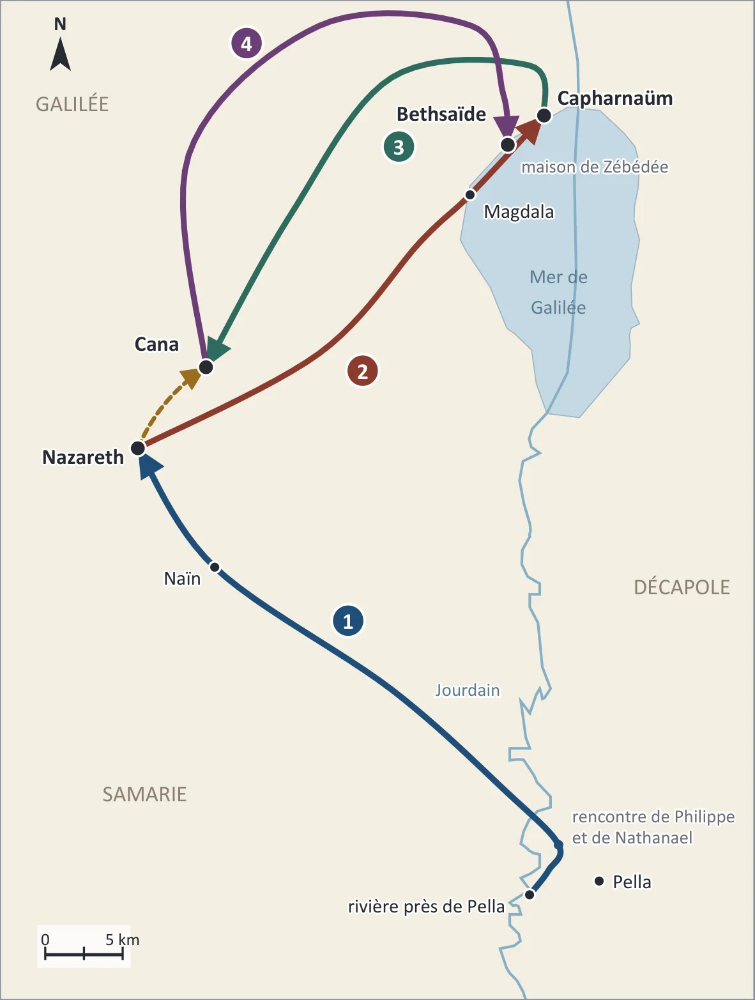
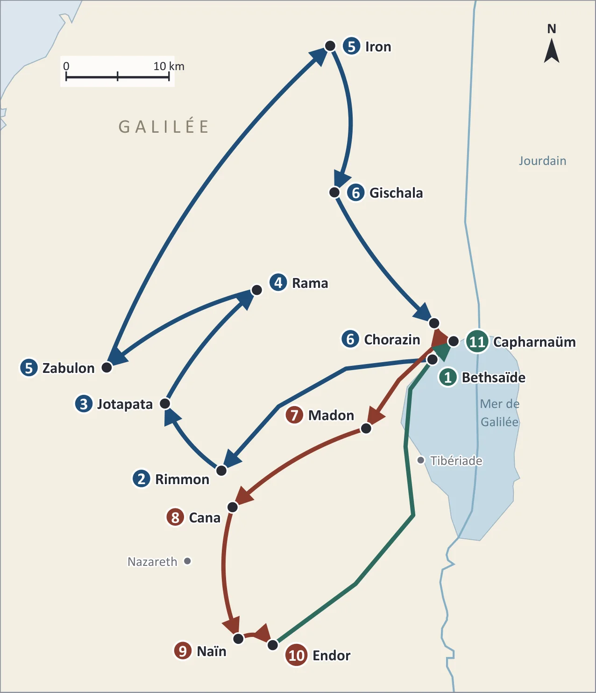
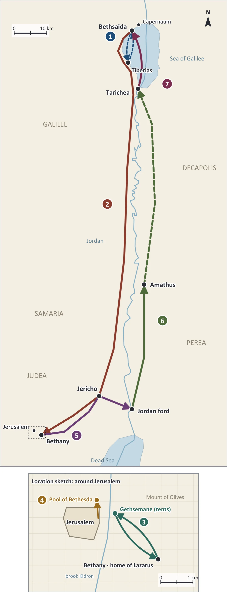

Partie III Jean le Baptiste, la préparation et la formation des apôtres
Fascicules 135–147
Fascicule 135Jean le Baptistemars 7 av. J.-C. – janvier 28 apr. J.-C.
| Évènement | Livre d’Urantia | Bible |
|---|---|---|
| La naissance de Jean | 135:0.1–5 | Lc 1:57-80 |
| Jean le Baptiste naquit le 25 mars de l’an 7 av. J.-C., conformément à la promesse que Gabriel avait faite à Élisabeth, et fut circoncis le huitième jour. Il grandit comme un enfant ordinaire dans la ville de Juda, à l’ouest de Jérusalem, et ses parents, le prêtre Zacharie et Élisabeth, lui donnèrent une éducation mentale et spirituelle méthodique.Diffère de la BibleL’Évangile de Luc raconte l’imposition du nom de Jean et la langue de Zacharie déliée pour prophétiser, tandis que le Livre d’Urantia dit qu’en dehors de la visite de Gabriel et du rêve de Zacharie, rien de surnaturel n’accompagna la naissance de Jean. | ||
| 1. Jean devient un naziréen | 135:1.1–4 | Aucun |
| À quatorze ans, Jean se rendit avec ses parents à Engaddi, près de la mer Morte, quartier général méridional de la confrérie des naziréens, où il prononça le vœu de naziréen à vie, puis il offrit un sacrifice au temple de Jérusalem. À seize ans, inspiré par la lecture de l’histoire d’Élie, il commença à porter un vêtement de poil et une ceinture de cuir. | ||
| 2. La mort de Zacharie | 135:2.1–4 | Aucun |
| Quand Zacharie mourut en juillet de l’an 12, Jean fit des offrandes de purification à cause de son vœu de naziréen. En septembre de cette année-là, à Nazareth, Jésus l’exhorta à rentrer chez lui et à prendre soin de sa mère. Comme Jean refusait l’allocation sacerdotale, l’argent vint à manquer ; il s’installa donc avec Élisabeth à Hébron, et se rendit de plus en plus souvent à Engaddi. | ||
| 3. La vie d’un berger | 135:3.1–4 | Aucun |
| Jean construisit des abris de pierre le long d’un ruisseau de la vallée et garda des moutons avec Ezda, un orphelin de Beth-sour, se nourrissant de mouton, de lait de chèvre, de miel sauvage et de sauterelles. Grand admirateur du prophète Daniel, il acquit la conviction que l’ancien ordre touchait à sa fin et que le royaume des cieux approchait, tandis que sa mère lui assurait que Jésus était le Messie. | ||
| 4. La mort d’Élisabeth | 135:4.1–6 | Aucun |
| Après la mort d’Élisabeth le 17 aout de l’an 22, Jean donna ses troupeaux à la confrérie et resta deux ans et demi à Engaddi, lisant Isaïe et Malachie. Longtemps troublé par la prophétie selon laquelle Élie devait venir d’abord, il résolut finalement d’être le héraut du Messie et quitta Engaddi en mars de l’an 25. | ||
| 5. Le royaume de Dieu | 135:5.1–8 | Aucun |
| Quand Jean apparut, les Juifs, formés par les apocalyptistes, croyaient que le royaume des cieux était proche. Leurs espérances variaient grandement : un royaume terrestre sous un fils de David, un nouveau ciel et une nouvelle terre, un Fils de l’Homme venant du ciel. Ainsi, l’annonce du royaume par Jean revêtait pas moins d’une demi-douzaine de significations. | ||
| 6. Jean commence à prêcher | 135:6.1–8 | Mt 3:1-12; Mc 1:1-8; Lc 3:1-15 |
| Au début de mars de l’an 25, Jean commença à prêcher au gué de Béthanie, en face de Jéricho, baptisant les Juifs pour la rémission des péchés. Pendant quatre mois, des dizaines de milliers de gens vinrent l’écouter. Il exigea des pharisiens et des sadducéens des fruits dignes de la repentance et donna des conseils pratiques aux publicains et aux soldats.Diffère de la BibleLes Évangiles parlent de poil de chameau et de sauterelles avec du miel sauvage ; le Livre d’Urantia décrit un vêtement de poil et explique que les pierres étaient les douze pierres commémoratives dressées par Josué. Il place les paroles sur celui qui vient lors du voyage ultérieur vers le nord. | ||
| Les prêtres et les lévites demandent si Jean est le Messie | 135:6.6 | Jn 1:19-28 |
| En mai, tandis que Jean s’attardait encore au gué de Béthanie, les prêtres et les lévites envoyèrent une délégation pour lui demander s’il prétendait être le Messie et en vertu de quelle autorité il prêchait. Jean leur dit d’aller dire à leurs maitres qu’ils avaient entendu la voix de quelqu’un qui crie dans le désert, comme l’avait annoncé Isaïe.Diffère de la BibleL’Évangile de Jean lui fait nier, en un seul échange, être le Christ, Élie et le prophète, tandis que le Livre d’Urantia ne le fait répondre ici que par les paroles d’Isaïe et place ces dénégations lors d’une seconde délégation à Pella. | ||
| 7. Jean voyage vers le nord | 135:7.1–3 | Mt 3:11; Mc 1:7-8; Lc 3:16-18 |
| Jean remonta le Jourdain vers le nord, s’arrêtant en plus d’une douzaine d’endroits. Il ne douta jamais du royaume à venir, mais ne savait pas avec certitude si Jésus en serait le chef. À Adam, quand ses disciples lui demandèrent s’il était le Messie, il parla pour la première fois d’un plus grand qui viendrait après lui et qui baptiserait du Saint-Esprit.Diffère de la BibleLes Évangiles placent ces paroles dans la prédication générale de Jean au Jourdain, tandis que le Livre d’Urantia les situe d’abord à Adam, en réponse à la question de ses disciples ; la mention par Matthieu et Luc d’un baptême de feu en est absente. | ||
| Carte 18Le baptême près de Pella et les quarante jours dans les collines de Pérée13 janvier – 23 février de l’an 26 | ||
| 8. La rencontre de Jésus et de JeanCarte 18-① De Capharnaüm au Jourdain près de PellaCarte 18-② Quarante jours dans les collines de Pérée | 135:8.1–7 | Mt 3:13-17; Mc 1:9-11; Lc 3:21-22 |
| Le 13 janvier de l’an 26, Jésus déposa ses outils au chantier naval de Capharnaüm et se rendit à Pella avec ses frères Jacques et Jude. Le lendemain à midi, Jean baptisa les trois frères dans le Jourdain. Les quatre hommes qui étaient dans l’eau virent une apparition au-dessus de Jésus et entendirent une voix l’appeler un Fils bienaimé ; Jésus partit ensuite vers les collines de l’est.Diffère de la BibleLes Évangiles font venir Jésus seul, avec les cieux qui s’ouvrent et l’Esprit qui descend comme une colombe, tandis que le Livre d’Urantia dit qu’il fut baptisé avec ses deux frères, que seuls les quatre virent l’apparition et entendirent la voix, et qu’il n’y eut pas de colombe. | ||
| 9. Quarante jours de prédication | 135:9.1–9 | Jn 1:19-34 |
| Pendant les quarante jours de Jésus dans les collines, Jean prêcha avec une certitude nouvelle tandis que ses disciples débattaient de la nature du Messie. Une délégation de Jérusalem vint à Pella lui demander qui il était et, le 23 février, Jean proclama que Jésus, qui revenait, était le Fils de Dieu. Le lendemain, les deux hommes se séparèrent pour la dernière fois.Diffère de la BibleL’Évangile de Jean présente Jésus le lendemain de l’interrogatoire de la délégation, tandis que le Livre d’Urantia dit que la délégation vint environ trois semaines après le départ de Jésus et que la proclamation eut lieu le 23 février, après les quarante jours. | ||
| Une nouvelle délégation de Jérusalem | 135:9.4 | Jn 1:19-28 |
| Environ trois semaines après le départ de Jésus, une nouvelle délégation des prêtres et des pharisiens de Jérusalem arriva à Pella et demanda à Jean s’il était Élie, le prophète promis par Moïse ou le Messie. Il nia chaque fois et dit que celui qui avait été parmi eux reviendrait et les baptiserait du Saint-Esprit.Diffère de la BibleL’Évangile de Jean situe cet échange à Béthanie au-delà du Jourdain, tandis que le Livre d’Urantia le place lors d’une seconde délégation à Pella et décrit celui qui vient comme ayant été parmi eux et sur le point de revenir. | ||
| « Voici le Fils de Dieu » — la proclamation de Jean | 135:9.7 | Jn 1:29-34 |
| Tôt le matin du sabbat, 23 février, tandis que Jésus approchait par le nord, Jean monta sur un grand rocher et le proclama le Fils de Dieu, le libérateur du monde. Il l’appela celui qui venait après lui et pourtant existait avant lui, et témoigna avoir vu l’esprit divin descendre sur lui et entendu la voix de Dieu.Diffère de la BibleL’Évangile de Jean l’appelle l’Agneau de Dieu qui ôte le péché du monde et dit que Jean ne le connaissait pas, tandis que le Livre d’Urantia a « le Fils de Dieu, le libérateur du monde » et ne mentionne pas de colombe. | ||
| 10. Jean voyage vers le sud | 135:10.1–3 | Aucun |
| Le 3 mars de l’an 26, Jean et les disciples qui lui restaient se dirigèrent vers le sud, tandis qu’environ un quart de ses fidèles partait en Galilée à la recherche de Jésus. Près d’Adam, Jean attaqua Hérode Antipas pour avoir pris la femme d’un autre homme. Revenu au gué de Béthanie en juin, il fut saisi par les agents d’Hérode tôt le matin du 12 juin. | ||
| 11. Jean en prison | 135:11.1–4 | Mt 14:1-4 |
| Jean languit en prison pendant plus d’un an et demi, souvent tenté de douter de la mission de Jésus. Après des mois d’emprisonnement, il dit à ses disciples que Jésus devait grandir et que lui devait diminuer. Quelques jours avant sa mort, il envoya des messagers demander si Jésus était le Messie, et reçut le dernier message du Maitre.Diffère de la BibleL’Évangile de Matthieu dit que Jean fut emprisonné pour avoir reproché à Hérode sa relation avec Hérodiade, la femme de son frère Philippe, tandis que le Livre d’Urantia indique à la fois la crainte d’une rébellion chez Hérode et son ressentiment envers les critiques de Jean sur ses affaires conjugales. | ||
| Les disciples de Jean lui rapportent l’œuvre de Jésus | 135:11.2 | Jn 3:25-36 |
| Après plusieurs mois d’emprisonnement de Jean, ses disciples se plaignirent que Jésus festoyait avec des publicains et des pécheurs mais ne faisait rien pour le libérer. Jean répondit qu’il n’était pas le Messie, mais celui qui avait été envoyé avant lui pour préparer le chemin, et qu’il se réjouissait comme l’ami du fiancé : il faut que lui grandisse et que moi, je diminue.Diffère de la BibleL’Évangile de Jean rapporte ces paroles alors que Jean baptisait encore, après une discussion sur la purification, tandis que le Livre d’Urantia les situe en prison, plusieurs mois après son arrestation. | ||
| Le dernier message de Jésus à Jean | 135:11.3–4 | Mt 11:2-30; Lc 7:18-35 |
| Comprenant qu’il avait prononcé une prophétie, Jean ne douta plus jamais entièrement de Jésus, mais il fut amèrement déçu que Jésus ne le délivre pas. Quelques jours avant sa mort, il envoya deux disciples demander si Jésus était le Messie. Jésus répondit qu’il n’avait pas oublié Jean et que la bonne nouvelle est annoncée aux pauvres ; ce fut la dernière parole que Jean reçut de lui.Diffère de la BibleLes Évangiles font citer à Jésus les aveugles qui voient et les morts qui ressuscitent, puis lui font louer Jean devant la foule, tandis que la réponse du Livre d’Urantia n’énumère aucun miracle et apporte le réconfort que Jean n’est pas oublié. | ||
| 12. La mort de Jean le Baptiste | 135:12.1–7 | Mt 14:5-12; Mc 6:14-29; Lc 9:7-9 |
| Jean fut détenu dans la prison de la forteresse de Macharée. Hérode craignait une rébellion s’il le relâchait et une émeute s’il le faisait mourir. Lors d’un festin d’anniversaire au palais de Macharée, Hérode, ivre, promit à la fille d’Hérodiade tout ce qu’elle demanderait ; à l’instigation de sa mère, elle demanda la tête de Jean, et il fut décapité cette nuit-là.Diffère de la BibleLes Évangiles ne nomment pas le lieu, tandis que le Livre d’Urantia identifie la forteresse et le palais de Macharée en Pérée et ajoute qu’Hérode fit sa promesse alors qu’il était appesanti par le vin ; pour le reste, le récit est à peu près le même. | ||
Carte 18Le baptême près de Pella et les quarante jours dans les collines de Pérée
13 janvier – 23 février de l’an 26 · Fascicules 135–137

- ①De Capharnaüm au Jourdain près de PellaJuste avant le repos de midi, le dimanche 13 janvier de l’an 26, il déposa ses outils au chantier naval en disant « Mon heure est venue », et partit pour Pella avec ses frères Jacques et Jude. Ils passèrent la nuit dans la vallée du Jourdain et arrivèrent sur les lieux où Jean baptisait vers midi le lendemain. [135:8.2–3]
- ②Quarante jours dans les collines de PéréeEn sortant de l’eau, il se dirigea vers les collines à l’est, et personne ne le revit pendant quarante jours. Il vécut dans une ancienne caverne creusée dans le flanc des collines, près d’un village appelé autrefois Beit Adis, et buvait à une petite source proche de cet abri rocheux. [135:8.6; 136:3.2; 136:4.14]
- ③La descente vers PellaTôt le samedi matin 23 février, il descendit des collines pour rejoindre le groupe de Jean campé à Pella. Il ramena à ses parents, dans le village voisin de Pella, un garçon qui s’était blessé. [137:0.1]
Fascicule 136Le baptême et les quarante joursjanvier de l’an 26
| Évènement | Livre d’Urantia | Bible |
|---|---|---|
| (Introduction) | 136:0.1–2 | Aucun |
| Jésus commença son œuvre publique au plus fort de l’intérêt suscité par la prédication de Jean, alors que les Juifs attendaient ardemment le Messie. Jean était un travailleur ardent et sérieux, tandis que Jésus était un ouvrier calme et heureux. Le message de Jean était la repentance ; Jésus faisait toujours suivre la repentance de l’évangile, la bonne nouvelle du royaume. | ||
| 1. Concepts du Messie attendu | 136:1.1–6 | Aucun |
| Les Juifs se représentaient le libérateur comme le serviteur du Seigneur, le fils de David, le Fils de l’Homme ou le Fils de Dieu, et attendaient un Messie qui, comme Moïse, les délivrerait miraculeusement de Rome. Ils n’avaient cependant aucune idée de natures humaine et divine unies en une seule personnalité ; cette incarnation ne fut révélée qu’en Jésus. | ||
| 2. Le baptême de Jésus | 136:2.1–8 | Mt 3:13-17; Mc 1:9-11; Lc 3:21-22 |
| En l’an 26, âgé de presque trente-et-un ans et demi, Jésus fut baptisé par Jean, suivant l’exemple des Israélites pieux ; ce fut un baptême de consécration, et non de repentance. Son Ajusteur intérieur le quitta et revint en tant qu’Ajusteur Personnalisé, le déclarant Fils bien-aimé. Ce jour-là prit fin la vie purement humaine de Jésus.Diffère de la BibleLes Évangiles disent que l’Esprit Saint descendit comme une colombe, tandis que le Livre d’Urantia l’explique comme le retour de l’Ajusteur Personnalisé, une forme que seul Jésus vit, alors que la voix fut entendue aussi par Jean et par les deux frères de Jésus. | ||
| 3. Les quarante jours | 136:3.1–7 | Mt 4:1-11; Mc 1:12-13; Lc 4:1-13 |
| Avant son baptême, Jésus avait rencontré et vaincu Caligastia sur le mont Hermon. Après le baptême, il passa quarante jours dans les collines de Pérée à préparer son œuvre publique. Il y rencontra Gabriel et le Père de la Constellation d’Édentia, et il lui fut dit que sa souveraineté était déjà complète et que le reste de sa vie lui appartenait, pour qu’il en dispose à son gré.Diffère de la BibleLes Évangiles disent que l’Esprit le conduisit au désert pour y jeûner quarante jours et y être tenté par le diable, tandis que le Livre d’Urantia situe la véritable lutte sur le mont Hermon, avant le baptême, et fait des quarante jours une période de préparation et de décision, et non de jeûne. | ||
| 4. Plans pour l’œuvre publique | 136:4.1–14 | Aucun |
| Jésus décida de ne pas enseigner aux côtés de Jean tant que l’œuvre de Jean ne serait pas achevée et, selon les instructions d’Emmanuel, de ne laisser aucun écrit permanent. Il ne jeûna pas et ne subit aucune tentation ; le troisième jour, il résolut de toujours choisir la volonté du Père. Il vivait dans une caverne rocheuse près du village de Beit Adis. | ||
| 5. La première grande décision | 136:5.1–6 | Aucun |
| Le troisième jour, Jésus contempla les armées célestes de Nébadon rassemblées, dont douze légions de séraphins. Il résolut de ne pas les utiliser à moins que la volonté du Père ne fût évidente et en confia le commandement à son Ajusteur Personnalisé, qui lui dit qu’il pouvait empêcher les actes impliquant l’espace, mais non ceux impliquant le temps. | ||
| 6. La deuxième décision | 136:6.1–11 | Mt 4:2-4; Lc 4:3-4 |
| Lorsque la faim se fit sentir le troisième jour, Jésus décida de ne pas créer de nourriture par ses pouvoirs de créateur, mais de se la procurer comme un homme ordinaire. Il résolut d’user du pouvoir surhumain pour les autres, mais jamais pour lui-même, et résuma sa décision par la parole de l’Écriture selon laquelle l’homme ne vivra pas de pain seulement.Diffère de la BibleLes Évangiles disent que le diable le tenta, après quarante jours de jeûne, de changer des pierres en pain, tandis que le Livre d’Urantia en fait une décision propre à Jésus face à la faim du troisième jour, le défi de l’adversaire étant une représentation postérieure. | ||
| 7. La troisième décision | 136:7.1–4 | Mt 4:5-7; Lc 4:9-12 |
| Jésus décida d’exercer le soin humain normal de sa sécurité personnelle, mais de refuser toute intervention surhumaine, même en danger de mort. Assis au bord d’un précipice, il savait qu’il pouvait sauter sans dommage, mais il refusa une démonstration défiant la loi de gravité de son Père, et il s’en tint à cette décision toute sa vie.Diffère de la BibleLes Évangiles disent que le diable plaça Jésus sur le pinacle du temple et lui dit de se jeter en bas, tandis que le Livre d’Urantia dépeint une décision à laquelle Jésus parvint seul, au bord d’un précipice rocheux dans les collines. | ||
| 8. La quatrième décision | 136:8.1–8 | Mt 4:8-10; Lc 4:5-8 |
| Jésus décida de ne pas recourir au pouvoir surhumain, aux signes ni aux prodiges pour gagner l’attention et l’allégeance des gens. Il connaissait des raccourcis, comme paraitre marcher dans les airs depuis le pinacle du temple à la Pâque, mais refusa de transiger avec la sagesse ou la richesse du monde, choisissant d’édifier le royaume par la voie naturelle et patiente.Diffère de la BibleLes Évangiles disent que le diable lui montra, du haut d’une montagne élevée, tous les royaumes du monde et les lui offrit en échange de son adoration, tandis que le Livre d’Urantia décrit la décision propre à Jésus sur l’usage de ses pouvoirs pour attirer des disciples. | ||
| 9. La cinquième décision | 136:9.1–13 | Aucun |
| En choisissant comment établir le royaume de Dieu, Jésus rejeta l’idée de l’inaugurer par des miracles et des démonstrations de puissance ou par une autorité politique et temporelle. Il conclut que les passages messianiques que sa mère lui avait enseignés ne se rapportaient pas à lui, et il résolut de retourner en Galilée, d’y proclamer tranquillement le royaume et de laisser les détails au Père. | ||
| 10. La sixième décision | 136:10.1 | Aucun |
| Le dernier jour de son isolement, avant de descendre rejoindre Jean et ses disciples, Jésus prit sa décision finale. Il promit à son Ajusteur Personnalisé que, dans toutes les autres questions aussi, il serait soumis à la volonté du Père, et il descendit de la montagne, le visage rayonnant de la gloire de la victoire spirituelle et de l’accomplissement moral. | ||
Fascicule 137Séjour d’attente en Galiléefévrier – juin de l’an 26
| Évènement | Livre d’Urantia | Bible |
|---|---|---|
| (Introduction)Carte 18-③ La descente vers Pella | 137:0.1 | Aucun |
| Tôt le samedi 23 février de l’an 26, Jésus descendit des collines et rejoignit le groupe de Jean campé à Pella. Toute la journée, il se mêla à la multitude, et il secourut un garçon blessé dans une chute, le ramenant sain et sauf chez ses parents, dans le village voisin de Pella. | ||
| 1. Le choix des quatre premiers apôtres | 137:1.1–8 | Mt 4:18-22; Mc 1:16-20; Lc 5:1-11; Jn 1:35-42 |
| Ce jour de sabbat, André, qui avait accompagné Jésus avec le garçon blessé, demanda à le suivre et devint le premier apôtre. Son frère Simon, après avoir consulté Jean, devint le deuxième et reçut le nom de Pierre. Cette nuit-là, Jacques et Jean, les fils de Zébédée, revenus de leurs recherches dans les collines, allèrent trouver Jésus et furent acceptés.Diffère de la BibleMatthieu, Marc et Luc montrent Jésus appelant des pêcheurs à leur travail au bord de la mer de Galilée, tandis que le Livre d’Urantia dit qu’André, Simon, puis Jacques et Jean le rejoignirent au camp de Jean près de Pella. | ||
| Carte 19De Pella par Nazareth à Cana et Bethsaïde24 février – 2 mars de l’an 26 | ||
| 2. Le choix de Philippe et de NathanaelCarte 19-① De Pella à Nazareth | 137:2.1–9 | Jn 1:43-51 |
| Le 24 février, Jésus prit congé de Jean près de Pella, tandis qu’Ezra rejetait Jésus et emmenait de nombreux disciples vers le sud pour former une secte séparée. En route vers la Galilée, Jésus dit à Philippe de Bethsaïde de le suivre et accepta Nathanael de Cana, que Philippe lui amena. Ils passèrent la nuit chez Joseph, à Nazareth.Diffère de la BibleL’Évangile de Jean dit que Jésus avait vu d’avance Nathanael sous le figuier et que Nathanael le confessa Fils de Dieu, tandis que le Livre d’Urantia ne connait ni cette prescience ni cette confession ; Philippe va le chercher sous un mûrier. | ||
| 3. La visite à CapharnaümCarte 19-② Par Magdala à CapharnaümCarte 19-③ Les noces de Cana | 137:3.1–7 | Aucun |
| Le lendemain, Jésus envoya ses apôtres en avant à des noces à Cana, vit son frère Jude à Magdala et arriva chez Zébédée à Capharnaüm le lundi soir. Marie, la famille et les disciples, s’attendant à ce que la promesse de Gabriel s’accomplisse et que Jésus manifeste sa puissance messianique à Cana, partirent pour Cana le mardi. | ||
| 4. Les noces de Cana | 137:4.1–17 | Jn 2:1-11 |
| Près de mille invités arrivèrent le mercredi aux noces de Naomie et de Johab, dans l’espoir d’un prodige. Jésus déclina la supplication de Marie de se révéler, mais, quand le vin vint à manquer, il eut compassion de sa mère en larmes et, par son désir, l’eau de six jarres de pierre devint du vin. Le Livre d’Urantia le qualifie de cas où le temps fut annihilé.Diffère de la BibleL’Évangile de Jean le présente comme le premier signe, Jésus ordonnant de remplir les jarres pour manifester sa gloire, tandis que le Livre d’Urantia dit que cela se produisit par son désir, mais sans son intention, et que Jésus lui-même fut le plus surpris. | ||
| Carte 20L’appel et l’ordination des apôtres — Bethsaïde et la mer de Galiléefévrier de l’an 26 – janvier de l’an 27 | ||
| 5. Retour à CapharnaümCarte 19-④ À BethsaïdeCarte 20-① De Cana à Bethsaïde | 137:5.1–4 | Mt 4:13-16; Lc 4:31; Jn 2:12 |
| Le matin qui suivit les noces, Jésus partit avec six apôtres pour la maison de Zébédée à Bethsaïde, en leur disant de ne pas parler du vin. Ce soir-là, les apôtres ne parvinrent pas à saisir sa mission. Après une nuit sans sommeil au bord du lac, Jésus décida de ne pas nier catégoriquement qu’il était le Messie et leur dit d’attendre la fin de la prédication de Jean.Diffère de la BibleL’Évangile de Jean dit que Jésus descendit à Capharnaüm avec sa mère, ses frères et ses disciples, tandis que le Livre d’Urantia dit qu’il partit sans prendre congé de sa famille, avec seulement six apôtres, pour la maison de Zébédée à Bethsaïde. | ||
| 6. Les évènements d’un jour de sabbat | 137:6.1–6 | Aucun |
| La première apparition publique de Jésus après son baptême eut lieu dans la synagogue de Capharnaüm le jour du sabbat, 2 mars de l’an 26. Devant une foule qui attendait des prodiges, il lut un passage d’Isaïe et dit seulement que, par la patience, ils verraient la gloire de Dieu. L’après-midi, il enseigna les apôtres depuis un bateau et leur dit de retourner à leur travail habituel et d’attendre. | ||
| 7. Quatre mois de formation | 137:7.1–14 | Aucun |
| Pendant quatre mois, de mars à juin, Jésus tint plus de cent séances avec les six apôtres et son frère Jacques, tandis que Marie perdait presque espoir. Il leur expliqua qui étaient les pharisiens, les sadducéens, les esséniens, les zélotes, les hérodiens et les Samaritains, et dit qu’il ne se joindrait à aucun de ces groupes. | ||
| 8. Sermon sur le royaume | 137:8.1–18 | Aucun |
| En apprenant l’arrestation de Jean, Jésus fit son dernier travail à l’établi de charpentier le 18 juin de l’an 26. Le jour du sabbat, 22 juin, dans la synagogue de Capharnaüm, il prêcha son premier grand sermon sur le royaume, déclarant qu’il n’est pas de ce monde, qu’il est déjà en eux et qu’on y entre par la foi. Environ un tiers des auditeurs crurent. | ||
Carte 19De Pella par Nazareth à Cana et Bethsaïde
24 février – 2 mars de l’an 26 · Fascicule 137

- ①De Pella à NazarethLe dimanche matin 24 février de l’an 26, Jésus prit congé de Jean le Baptiste au bord du fleuve près de Pella. En route vers la Galilée avec ses quatre disciples-apôtres, au bord du chemin près du Jourdain, il rencontra Philippe et Nathanael. Ils traversèrent le Jourdain et, passant par Naïn, atteignirent Nazareth tard dans la soirée ; ils passèrent la nuit chez Joseph, dans la maison où Jésus avait grandi. [137:2.1–9]
- ②Par Magdala à CapharnaümLe lendemain, il envoya ses apôtres en avant à Cana (en tirets), s’arrêta à Magdala pour voir son frère Jude et arriva à Capharnaüm le lundi soir, se rendant directement chez Zébédée. [137:3.1; 137:3.4]
- ③Les noces de CanaLe mardi, ils se rendirent tous à Cana. Le mercredi à midi, près de mille invités étaient arrivés pour le festin de noces de Naomie et de Johab. [137:3.6; 137:4.1]
- ④À BethsaïdeTrès tôt le lendemain matin, lui et ses six apôtres se rendirent directement chez Zébédée à Bethsaïde. Le matin suivant, il alla avec Zébédée à l’atelier de construction de bateaux. Le jour du sabbat, 2 mars, il fit sa première apparition publique depuis son baptême, dans la synagogue de Capharnaüm. [137:5.1–4; 137:6.1]
Carte 20L’appel et l’ordination des apôtres — Bethsaïde et la mer de Galilée
février de l’an 26 – janvier de l’an 27 · Fascicules 137–140

- ①De Cana à BethsaïdeFévrier de l’an 26 : très tôt le matin qui suivit les noces de Cana, Jésus et ses six apôtres se rendirent directement chez Zébédée à Bethsaïde. Pendant la période d’attente de mars, avril, mai et juin, il tint avec eux plus de cent séances. [137:5.1–2; 137:7.1–4]
- ②Envoyés deux par deux ; Jésus à NazarethLe dimanche 23 juin, il envoya les six deux par deux : Jacques et Jean à Khérésa, André et Pierre à Capharnaüm, Philippe et Nathanael à Tarichée. Pendant ce temps, Jésus se rendit à Nazareth pour voir sa famille ; au bout de deux semaines, ils revinrent chez Zébédée. [138:1.1; 138:1.4]
- ③Appel de Matthieu et de Simon ZélotèsAu bureau de péage de Capharnaüm, il appela Matthieu ; après un déjeuner de midi chez Matthieu, ils appelèrent Simon Zélotès. Ce soir-là, Matthieu donna un banquet. [138:3.1–4; 139:7.1]
- ④En bateau à KhérésaLe lendemain, tous les neuf se rendirent en bateau à Khérésa pour appeler Jacques et Judas, les fils jumeaux d’Alphée. [138:4.1–3]
- ⑤En bateau à TarichéeLes onze se rendirent en bateau à Tarichée, où Thomas et Judas Iscariot les attendaient au débarcadère des bateaux de pêche et furent reçus. [138:4.4; 138:5.1]
- ⑥Retour en bateau à CapharnaümAprès un jour et une nuit de repos supplémentaires, ils partirent en bateau pour Capharnaüm. Zébédée et Salomé avaient cédé leur grande maison à Jésus et à ses douze apôtres. [138:5.3–4]
- ⑦L’ordination des douzePeu avant midi, le dimanche 12 janvier de l’an 27, il rassembla les apôtres le long du rivage et se rendit avec eux sur les hautes terres au nord de Capharnaüm pour leur ordination, revenant le soir chez Zébédée. Le sabbat suivant, sur les mêmes hautes terres, il consacra les douze. [140:0.1–2; 140:6.1; 140:9.1]
Fascicule 138La formation des messagers du royaumejuin de l’an 26 – janvier de l’an 27
| Évènement | Livre d’Urantia | Bible |
|---|---|---|
| (Introduction) | 138:0.1–2 | Aucun |
| Après le sermon sur le royaume, Jésus convoqua seulement les six apôtres et leur révéla son projet de visiter les villes autour de la mer de Galilée. Ses frères Jacques et Jude furent blessés d’être laissés à l’écart, et depuis Cana il se tenait à distance de sa mère ; cette rupture avec sa famille dura jusqu’après la résurrection. Seule Ruth, la plus jeune, lui resta fidèle. | ||
| 1. Instructions finalesCarte 20-② Envoyés deux par deux ; Jésus à Nazareth | 138:1.1–5 | Aucun |
| Le 23 juin de l’an 26, Jésus envoya les six deux par deux pour un travail personnel, leur interdisant de baptiser et leur déconseillant la prédication publique : Jacques et Jean à Khérésa, André et Pierre à Capharnaüm, Philippe et Nathanael à Tarichée. Il demanda aussi à chacun de choisir un nouvel apôtre, pour arriver à douze. | ||
| 2. Le choix des six | 138:2.1–10 | Aucun |
| Lors de leur première mission de deux semaines, les six découvrirent la valeur du contact personnel et revinrent présenter leurs candidats. À l’unanimité furent acceptés Matthieu Lévi, Thomas Didyme, Jacques Alphée, Judas Alphée, Simon Zélotès et Judas Iscariot, choisis respectivement par André, Philippe, Jacques, Jean, Pierre et Nathanael. | ||
| 3. L’appel de Matthieu et de SimonCarte 20-③ Appel de Matthieu et de Simon Zélotès | 138:3.1–8 | Mt 9:9-13; Mc 2:13-17; Lc 5:27-32 |
| Le lendemain, au bureau de péage de Capharnaüm, Jésus dit à Matthieu : « Suis-moi », et après le déjeuner il appela Simon Zélotès, le candidat de Pierre. Ce soir-là, au banquet de Matthieu, des pharisiens objectèrent que Jésus mangeait avec des publicains et des pécheurs, et il répondit qu’il était venu appeler non les justes, mais les pécheurs.Diffère de la BibleLes Évangiles montrent Jésus appelant Matthieu en passant devant le bureau des impôts, tandis que le Livre d’Urantia dit qu’il rendit visite à un Matthieu déjà préparé, après la présentation d’André et le vote, et qu’il appela Simon Zélotès le même jour. | ||
| 4. L’appel des jumeauxCarte 20-④ En bateau à KhérésaCarte 20-⑤ En bateau à Tarichée | 138:4.1–4 | Aucun |
| Le lendemain, les neuf traversèrent en bateau jusqu’à Khérésa et appelèrent Jacques et Judas, les fils jumeaux d’Alphée, présentés par Jacques et Jean Zébédée. Jésus leur enseigna à ne jamais refuser de manger avec des pharisiens, des pécheurs, des publicains ou des Romains, et cette nuit-là il parla pour la première fois de l’origine, de la nature et de la destinée des esprits impurs. | ||
| 5. L’appel de Thomas et de JudasCarte 20-⑥ Retour en bateau à Capharnaüm | 138:5.1–4 | Aucun |
| À Tarichée, Jésus accepta Thomas, le candidat de Philippe, bien qu’il manquât de foi, et Judas Iscariot, le candidat de Nathanael. Après avoir instruit les douze au sujet de l’Esprit Saint et du ministère des séraphins, il se rendit à Capharnaüm pour s’installer dans la maison que Zébédée leur avait cédée. Ce soir-là, Judas demanda pourquoi Jésus ne libérait pas Jean. | ||
| 6. La semaine de formation intensive | 138:6.1–5 | Aucun |
| La semaine suivante, les six nouveaux apôtres furent formés intensivement par ceux qui les avaient présentés. Jésus fixa le mercredi comme jour de repos hebdomadaire et les exhorta à ne pas bâtir de légendes ni de culte autour de sa personne, mais à proclamer l’évangile du royaume et la révélation du Père. Il prévoyait des mois de travail tranquille autour de la mer de Galilée. | ||
| 7. Une nouvelle déception | 138:7.1–7 | Aucun |
| Tôt le premier dimanche, Pierre, Jacques Zébédée et Judas Iscariot demandèrent quelles places ils occuperaient dans le royaume, et Jésus les reprit, disant que son royaume n’est pas de ce monde. Les apôtres lui promirent leur loyauté. Les fonds venant à manquer, Jésus leur fit alterner deux semaines de pêche et deux semaines de travail personnel, plan suivi jusqu’à la fin de l’an 26. | ||
| 8. Premiers travaux des douze | 138:8.1–11 | Aucun |
| À la mi-aout de l’an 26, les douze partirent deux par deux dans les champs d’action qu’André leur avait assignés, Jésus rejoignant chaque paire à tour de rôle. Il enseignait le pardon du péché par la foi et leur dit de ne parler ni de l’emprisonnement de Jean, ni de la voix entendue au baptême, ni du vin de Cana. Il enseigna aussi que les femmes sont les égales des hommes dans le royaume des cieux. | ||
| 9. Cinq mois d’essai | 138:9.1–3 | Aucun |
| Les cinq mois d’alternance entre la pêche et le travail personnel furent une rude épreuve pour les douze, mais ils restèrent fidèles et en vinrent à considérer Jésus comme leur ami le plus proche. Pendant ce temps, sa famille, à l’exception de Ruth, l’abandonna pratiquement. Les apôtres travaillèrent à Capharnaüm, Chorazin, Magdala, Cana et ailleurs, et prirent des dispositions pour l’entretien de leurs familles. | ||
| 10. L’organisation des douze | 138:10.1–11 | Aucun |
| Les douze s’organisèrent : André comme président ; Pierre, Jacques et Jean comme compagnons personnels de Jésus ; Philippe comme intendant ; Nathanael chargé des familles ; Matthieu comme agent financier ; Thomas chargé de l’itinéraire ; les jumeaux Alphée chargés des multitudes ; Simon Zélotès responsable des récréations ; Judas comme trésorier. Le 12 janvier de l’an 27, Jésus les ordonna officiellement ambassadeurs du royaume. | ||
Fascicule 139Les douze apôtres
| Évènement | Livre d’Urantia | Bible |
|---|---|---|
| Le choix des douze apôtres | 139:0.1–4 | Mt 10:2-4; Mc 3:13-19; Lc 6:12-16 |
| Bien que Jésus ait sans cesse anéanti les espoirs d’élévation personnelle de ses apôtres, un seul l’abandonna, témoignage du charme de sa vie. Les douze représentaient de nombreux types de tempérament, et tous, sauf les jumeaux Alphée, étaient diplômés des écoles de la synagogue. Les dire « ignorants et sans instruction » signifiait qu’ils n’étaient pas formés à la tradition rabbinique ni à ses méthodes d’interprétation.Diffère de la BibleLes Évangiles disent que Jésus désigna les douze ensemble sur une montagne, tandis que le Livre d’Urantia dit qu’il en appela d’abord six, dont chacun présenta ensuite un autre candidat, pour arriver à douze. Il note aussi que les jumeaux Alphée étaient appelés Thaddée et Lébbée. | ||
| 1. André, le premier choisi | 139:1.1–12 | Aucun |
| André, né à Capharnaüm, ainé de cinq enfants, était en l’an 26 un pêcheur célibataire de trente-trois ans. Président des douze, il était un bon organisateur, un meilleur administrateur encore et le meilleur juge des hommes. Il vécut sans jalousie envers son frère Pierre et fut finalement crucifié à Patras, en Achaïe. | ||
| 2. Simon Pierre | 139:2.1–15 | Aucun |
| Simon Pierre, pêcheur marié de Bethsaïde, devint apôtre à trente ans. Impulsif, optimiste et éloquent, c’était un meneur né qui admirait par-dessus tout la tendresse suprême de Jésus. Étrange mélange de courage et de lâcheté, il renia le Maitre lorsqu’on le tourna en ridicule. Le plus grand prédicateur des douze, il fut crucifié à Rome. | ||
| 3. Jacques Zébédée | 139:3.1–9 | Aucun |
| Jacques Zébédée, pêcheur et père de quatre enfants, devint apôtre à trente ans ; avec son frère Jean, il était surnommé « fils du tonnerre ». Ses faiblesses étaient un tempérament emporté et des silences inexpliqués, mais c’était un penseur bien équilibré qui savait voir tous les aspects d’une question. Il fut le premier apôtre à mourir, mis à mort par l’épée sur l’ordre d’Hérode Agrippa. | ||
| 4. Jean Zébédée | 139:4.1–15 | Aucun |
| Jean Zébédée, le plus jeune apôtre avec ses vingt-quatre ans, servit d’agent personnel de Jésus pour les affaires de famille. La vanité était sa faiblesse, mais il était digne de confiance et audacieux, et il suivit Jésus jusqu’au bout la nuit de son arrestation. Il devint l’apôtre de l’amour, écrivit l’Apocalypse à Patmos et mourut de mort naturelle à Éphèse en l’an 103. | ||
| 5. Philippe le curieux | 139:5.1–12 | Aucun |
| Philippe de Bethsaïde, le cinquième apôtre choisi, avait vingt-sept ans et était marié depuis peu. Dépourvu d’imagination mais méthodique et sûr, il servit d’intendant au groupe apostolique et fut un travailleur personnel persuasif dont la méthode était « Viens et vois ». Il eut un grand succès en Samarie et fut crucifié et enterré à Hiérapolis. | ||
| 6. L’honnête Nathanael | 139:6.1–9 | Aucun |
| Nathanael, le sixième apôtre, amené par Philippe, avait vingt-cinq ans, était célibataire et soutenait ses parents âgés à Cana. Honnête et sans artifice, bien qu’enclin à l’orgueil et aux préjugés, il était le philosophe et le conteur du groupe et apaisait les tensions par l’humour. Il veillait sur les familles des apôtres et mourut en Inde. | ||
| 7. Matthieu Lévi | 139:7.1–10 | Aucun |
| Matthieu Lévi, le septième apôtre, choisi par André, était un receveur des douanes de Capharnaüm âgé de trente-et-un ans. Comme agent financier, il recueillait les fonds du groupe et donna secrètement à l’œuvre presque toute sa fortune personnelle, ce que seul Jésus savait. Ses notes devinrent la base de l’Évangile selon Matthieu, et il fut mis à mort à Lysimachie, en Thrace. | ||
| 8. Thomas Didyme | 139:8.1–13 | Aucun |
| Thomas Didyme, le huitième apôtre, choisi par Philippe, était un pêcheur de Tarichée âgé de vingt-neuf ans, autrefois charpentier et maçon. Son esprit analytique et sceptique le portait au doute, mais il était honnête et courageux et, une fois une décision prise, il était le premier à dire « Allons-y ! » Il vénérait le caractère équilibré de Jésus et fut mis à mort à Malte. | ||
| 9. Jacques et Judas Alphée | 139:9.1–11 | Aucun |
| Jacques et Judas, les fils jumeaux d’Alphée, étaient des pêcheurs de vingt-six ans des environs de Khérésa, choisis par Jacques et Jean Zébédée. Hommes ordinaires, sans points forts ni points faibles, ils s’occupaient des multitudes et faisaient de menus travaux, ce qui encourageait beaucoup les gens du peuple. Fidèles jusqu’au bout, ils retournèrent à leurs familles et à leurs filets après la crucifixion. | ||
| 11. Simon le Zélote | 139:11.1–11 | Aucun |
| Simon Zélotès, le onzième apôtre, choisi par Pierre, était un marchand de Capharnaüm de vingt-huit ans et un ardent patriote du parti des zélotes. Il organisait les récréations du groupe et excellait à amener les hésitants à la foi, mais il ne se défit jamais entièrement de son nationalisme. Après les persécutions, il partit pour l’Afrique, où il mourut. | ||
| 12. Judas Iscariot | 139:12.1–14 | Aucun |
| Judas Iscariot, le douzième apôtre, choisi par Nathanael, était né à Kérioth ; seul Judéen des douze, il était célibataire et avait trente ans. Trésorier compétent, c’était un enfant gâté qui surestimait sa propre importance et nourrissait des rancunes. Après que Jésus eut publiquement rejeté sa protestation au sujet du coffret d’encens brisé, il le trahit par vengeance et finit par se donner la mort. | ||
Fascicule 140L’ordination des douzejanvier de l’an 27
| Évènement | Livre d’Urantia | Bible |
|---|---|---|
| (Introduction)Carte 20-⑦ L’ordination des douze | 140:0.1–3 | Aucun |
| Peu avant midi, le dimanche 12 janvier de l’an 27, Jésus longea le rivage en appelant les douze, d’abord André et Pierre, puis Jacques et Jean, puis les autres deux par deux. Il les conduisit sur les hautes terres au nord de Capharnaüm et commença à les instruire en vue de leur ordination officielle. | ||
| 1. Instruction préliminaire | 140:1.1–7 | Aucun |
| Avant l’ordination, Jésus enseigna aux douze, assis devant lui, que le royaume du Père est un règne éternel établi dans le cœur des hommes, dont la puissance ne réside ni dans les armées ni dans les richesses. Ils en franchissent la porte par la foi, mais doivent porter les fruits de l’esprit, et quiconque veut être grand doit se faire le serviteur de tous. | ||
| 2. L’ordination | 140:2.1–3 | Aucun |
| Jésus fit agenouiller les douze en cercle autour de lui et posa les mains sur la tête de chacun, en commençant par Judas Iscariot et en terminant par André. Puis il pria, les recommandant au Père, et les apôtres s’avancèrent un à un, en silence, pour l’embrasser. | ||
| 3. Le sermon d’ordination | 140:3.1–21 | Mt 5:1-48; 6:1-34; 7:1-29; Lc 6:20-49 |
| Aussitôt après l’ordination, Jésus donna ses instructions à ses nouveaux ambassadeurs : heureux les pauvres en esprit, les doux et d’autres encore ; ils sont le sel de la terre et la lumière du monde ; ils doivent aimer leurs ennemis, ne pas juger autrui et reconnaitre les faux prophètes à leurs fruits. Au coucher du soleil, ils descendirent de la montagne sans poser de questions.Diffère de la BibleL’Évangile de Matthieu (chapitres 5–7) présente ceci comme le Sermon sur la montagne entendu par des foules étonnées, tandis que le Livre d’Urantia en fait une charge d’ordination adressée aux douze seuls, sans les paroles sur le iota et le trait de lettre, la porte étroite ou la maison bâtie sur le roc. | ||
| 4. Vous êtes le sel de la terre | 140:4.1–11 | Mt 5:13-16 |
| Le Livre d’Urantia explique que le prétendu Sermon sur la montagne n’est pas l’évangile de Jésus, mais sa charge d’ordination aux douze. Le sel était précieux, on s’en servait même comme monnaie ; la lumière ne doit pas attirer l’attention sur elle-même ; un caractère fort vient de ce que l’on fait réellement le bien ; et le caractère moral peut se développer.Diffère de la BibleLes Évangiles ne donnent que les paroles sur le sel et la lumière, tandis que le Livre d’Urantia ajoute que le sel servait de monnaie, ainsi qu’un long commentaire sur la lumière, le caractère et le bonheur. | ||
| 5. Amour paternel et amour fraternel | 140:5.1–24 | Mt 5:3-12; Lc 6:20-23 |
| Jésus enseigne l’amour paternel, qui aime les autres comme lui les aime, au-delà de l’amour fraternel, qui aime son prochain comme soi-même. Les quatre premières béatitudes sont des attitudes de foi ; les quatre dernières (ceux qui pleurent, les miséricordieux, les artisans de paix, les persécutés) sont des réactions suprêmes de l’amour paternel. Les béatitudes reposent sur la foi et l’amour, non sur la loi.Diffère de la BibleLes Évangiles énumèrent les béatitudes en une seule série, tandis que le Livre d’Urantia les divise en quatre attitudes de foi et quatre réactions de l’amour paternel, et les dispose dans un ordre différent. | ||
| 6. Le soir de l’ordination | 140:6.1–14 | Mt 5:21-48; 6:1-34; 7:1-29 |
| Le soir de l’ordination, dans le jardin de Zébédée, Jésus continua d’instruire les apôtres à la demande d’André. Il dit qu’il n’était pas venu abolir la loi et les prophètes, mais les accomplir, répondit aux questions de plusieurs apôtres, puis eut des entretiens particuliers avec chacun jusqu’à l’aube, sans réveiller les jumeaux endormis.Diffère de la BibleLes Évangiles présentent ces paroles comme faisant partie d’un unique sermon sur la montagne, tandis que le Livre d’Urantia les situe ce soir-là dans le jardin de Zébédée, en réponse aux questions des apôtres. | ||
| Les nouveaux commandements — « Vous avez entendu dire … mais moi je vous dis » | 140:6.3–13 | Mt 5:21-48; 6:1-34; 7:1-29 |
| Lorsque Pierre demanda un nouveau commandement, Jésus regarda, au-delà des commandements contre le meurtre et l’adultère, le mobile et l’intention. Répondant à Jacques sur le divorce, à Nathanael sur « œil pour œil » et à Thomas sur la mise en commun de tous les biens, il enseigna les bonnes actions et la prière dans le secret, le trésor dans le ciel et la libération de l’anxiété du lendemain.Diffère de la BibleMatthieu interdit le divorce sauf pour cause d’impudicité et inclut l’interdiction des serments et le Notre Père, tandis que dans le Livre d’Urantia Jésus refuse de légiférer sur le divorce, et il n’est question ici ni des serments ni du Notre Père. | ||
| 7. La semaine après l’ordination | 140:7.1–8 | Aucun |
| Le lendemain, comme Thomas demandait de rester quelques jours de plus, Jésus accepta de demeurer jusqu’au sabbat. Cette semaine-là, les douze enseignèrent les visiteurs venus à Bethsaïde de Tyr, de Sidon, de Damas, de Jérusalem et d’ailleurs, et Jésus exposa à plusieurs reprises les deux motifs de sa mission : révéler le Père et rendre les hommes conscients de leur filiation. | ||
| 8. Le jeudi après-midi, sur le lac | 140:8.1–32 | Aucun |
| Le jeudi après-midi, Jésus emmena Pierre, Jacques et Jean sur le lac et leur parla du royaume pendant quatre heures. Il traita de l’accomplissement de la volonté du Père, de ses attitudes politiques, sociales et économiques et de la religion personnelle, enseignant la non-résistance et l’absence de représailles, l’abstention dans les questions politiques, l’importance de la famille et l’influence de la richesse sur les hommes. | ||
| 9. Le jour de la consécration | 140:9.1–4 | Aucun |
| Le sabbat suivant, Jésus ramena les apôtres sur les hautes terres de leur ordination pour la consécration des douze. Les appelant un à un devant lui, il les chargea d’aller dans le monde entier prêcher la bonne nouvelle du royaume, les envoyant comme des brebis au milieu des loups, prudents comme des serpents et inoffensifs comme des colombes. Aucun enseignement nouveau ne fut donné. | ||
| 10. Le soir après la consécration | 140:10.1–10 | Aucun |
| Ce soir-là, sous la pluie, à l’intérieur, Jésus enseigna aux douze ce qu’ils devaient être, et non ce qu’ils devaient faire. Il dit à Thomas que devenir comme de petits enfants signifie la relation d’un enfant avec le Père, répondit à Simon Zélotès que tous les hommes sont les fils de Dieu, et exposa à Jean les trois éléments essentiels du royaume des cieux. | ||
Fascicule 141Le commencement de l’œuvre publiquejanvier – mars de l’an 27
| Évènement | Livre d’Urantia | Bible |
|---|---|---|
| Carte 21Le long de la vallée du Jourdain vers la Judéejanvier – avril de l’an 27 | ||
| (Introduction)Carte 21-① De Bethsaïde à Tarichée | 141:0.1–2 | Aucun |
| Le dimanche 19 janvier de l’an 27, Jésus et les douze se préparèrent à quitter leur quartier général de Bethsaïde pour monter à Jérusalem pour la Pâque. Juste avant le départ, André trouva Jésus en pleurs dans un bateau, plus bas sur la plage, parce qu’aucun membre de la famille de son père Joseph n’était venu leur souhaiter bon voyage. | ||
| 1. Départ de GaliléeCarte 21-② Le Jourdain près de Pella | 141:1.1–5 | Aucun |
| Pour éviter d’attirer l’attention d’Hérode, Jésus descendit vers le sud avec ses apôtres, s’arrêtant la première nuit à Tarichée, puis séjournant plus de deux semaines à l’endroit du Jourdain, près de Pella, où il avait été baptisé. Jésus ne fit aucune prédication publique, et les apôtres enseignèrent les disciples de Jean sans baptiser. | ||
| 2. La loi de Dieu et la volonté du Père | 141:2.1–3 | Aucun |
| La veille du départ de Pella, Jésus enseigna que le royaume des cieux n’est pas le règne d’un Messie sur le trône de David, mais la prise de conscience et la reconnaissance du règne de Dieu dans le cœur des hommes. Quand la volonté du Père est votre loi, vous êtes à peine dans le royaume ; quand elle devient votre volonté, vous y êtes vraiment. | ||
| 3. Le séjour à AmathusCarte 21-③ Près d’Amathus | 141:3.1–8 | Aucun |
| Jésus et les apôtres restèrent près d’Amathus pendant près de trois semaines ; les apôtres prêchaient deux fois par jour, et Jésus prêchait chaque sabbat après-midi. André régla les frictions entre les disciples de Jean et les nouveaux, tandis que Jésus s’en tenait à l’écart. Le chapitre dépeint la personnalité forte et virile de Jésus. | ||
| 4. Enseignement au sujet du Père | 141:4.1–9 | Aucun |
| À Amathus, Jésus enseigna un nouveau concept de Dieu : un Père qui aime chaque personne, et non un grand comptable qui enregistre les péchés. Il chercha à libérer les apôtres de l’idée du sacrifice d’animaux et leur apprit à servir les malades en distinguant trois afflictions : les maladies de la chair, les mentals troublés et la possession par des esprits mauvais. | ||
| 5. Unité spirituelle | 141:5.1–4 | Aucun |
| Lorsque Jacques Zébédée demanda comment ils pourraient tous apprendre à voir les choses de la même manière, Jésus répondit qu’il ne leur avait jamais enseigné à voir les choses de la même manière. Ce qu’il demandait, c’était l’unité spirituelle, jaillissant d’un mobile commun, faire la volonté du Père, et d’un but commun, trouver le Père et devenir semblable à lui. | ||
| 6. La dernière semaine à Amathus | 141:6.1–5 | Aucun |
| Au cours de la dernière semaine à Amathus, Simon Zélotès amena à Jésus Téherma, un commerçant persan de Damas. Comme Simon n’avait pas réussi à le persuader, Jésus lui enseigna à ne pas chercher à ôter l’erreur du cœur des chercheurs, mais à nourrir leur âme affamée, et Téherma entra dans le royaume. Cette nuit-là, Jésus parla de la vie nouvelle dans le royaume. | ||
| 7. À Béthanie au-delà du JourdainCarte 21-④ Béthanie au-delà du JourdainCarte 21-⑤ Trois jours dans les collines | 141:7.1–15 | Jn 3:22-24 |
| Le 26 février, Jésus et ses compagnons se rendirent au gué près de Béthanie en Pérée, où Jean avait proclamé le royaume pour la première fois, et y enseignèrent pendant quatre semaines. Au cours de la deuxième semaine, Jésus se reposa trois jours avec Pierre, Jacques et Jean dans les collines au sud de Jéricho, leur enseignant des vérités nouvelles, comme la révélation de Dieu en tant que Père et le salut par la foi.Diffère de la BibleL’Évangile de Jean dit que Jésus baptisait en Judée alors que Jean n’était pas encore emprisonné, tandis que le Livre d’Urantia dit que Jean était déjà en prison et que les apôtres ne baptisaient pas à cette époque. | ||
| 8. Travail à JérichoCarte 21-⑥ Les visites des apôtres à JérichoCarte 21-⑦ Par Jéricho à Béthanie | 141:8.1–3 | Aucun |
| Pendant les quatre semaines à Béthanie au-delà du Jourdain, André envoya des couples d’apôtres à Jéricho, où ils allèrent de maison en maison servir les affligés. C’est là que la mission de prêcher la bonne nouvelle et de servir les malades fut pour la première fois pleinement accomplie. En route vers Jérusalem, Jésus passa trois jours avec une délégation de Mésopotamie. | ||
| Carte 22Premier travail avec les apôtres — Judée, Samarie et Décapoleavril de l’an 27 – janvier de l’an 28 | ||
| 9. Départ pour JérusalemCarte 22-① Béthanie et Jérusalem | 141:9.1–3 | Aucun |
| Le lundi, dernier jour de mars, Jésus et les apôtres montèrent vers Jérusalem et se reposèrent cinq jours chez Lazare à Béthanie, qui devint leur quartier général pendant le séjour à Jérusalem. Le dimanche matin 6 avril, Jésus et les douze se rendirent ensemble à Jérusalem pour la première fois. | ||
Carte 21Le long de la vallée du Jourdain vers la Judée
janvier – avril de l’an 27 · Fascicule 141

- ①De Bethsaïde à TarichéeLe 19 janvier de l’an 27, Jésus et les douze quittèrent la maison de Zébédée vers midi pour monter à Jérusalem pour la Pâque par la vallée du Jourdain. Le premier jour, ils n’allèrent que jusqu’à Tarichée, où ils se reposèrent pour la nuit. [141:0.1; 141:1.2]
- ②Le Jourdain près de PellaC’est là que Jean avait prêché environ un an auparavant et que Jésus avait reçu le baptême. Ils y restèrent plus de deux semaines, et plusieurs centaines de personnes vinrent de Galilée, de Phénicie, de Syrie, de la Décapole, de Pérée et de Judée. [141:1.2; 141:2.1]
- ③Près d’AmathusIls y restèrent près de trois semaines. Les apôtres prêchaient deux fois par jour, et Jésus prêchait chaque sabbat après-midi. Téherma, un Persan qui faisait des affaires à Damas, vint le voir. [141:3.1; 141:6.1]
- ④Béthanie au-delà du JourdainLe 26 février, ils descendirent le Jourdain jusqu’au gué près de Béthanie en Pérée, où Jean avait commencé à proclamer le royaume à venir, et ils y restèrent quatre semaines. [141:7.1]
- ⑤Trois jours dans les collinesAu cours de la deuxième semaine, Jésus emmena Pierre, Jacques et Jean dans les collines de l’autre côté du fleuve, au sud de Jéricho, pour trois jours de repos, et les enseigna. [141:7.2]
- ⑥Les visites des apôtres à JérichoPlusieurs fois par semaine, André envoyait des couples d’apôtres monter à Jéricho pour un jour ou deux. C’est là que la mission de servir les affligés fut pour la première fois pleinement mise en œuvre (en pointillé). [141:8.1–2]
- ⑦Par Jéricho à BéthanieEn montant vers Jérusalem, ils s’arrêtèrent à Jéricho, où Jésus passa trois jours avec une délégation de Mésopotamie. Le lundi, dernier jour de mars, ils gravirent les collines et se reposèrent cinq jours chez Lazare, à Béthanie. [141:8.3; 141:9.1–2]
Carte 22Premier travail avec les apôtres — Judée, Samarie et Décapole
avril de l’an 27 – janvier de l’an 28 · Fascicules 141–145

- ①Béthanie et JérusalemÀ la fin de mars de l’an 27, ils se reposèrent cinq jours chez Lazare à Béthanie et, le dimanche 6 avril, descendirent à Jérusalem. Durant tout le mois d’avril, ils travaillèrent à Jérusalem, sortant chaque soir pour passer la nuit à Béthanie. [141:9.2–3; 142:0.1]
- ②Bethléem et HébronÀ la fin d’avril, l’opposition s’était accrue, et ils se rendirent au sud, à Bethléem et à Hébron, consacrant tout le mois de mai à des visites de maison en maison. Pendant ce temps, Jésus et Abner visitèrent la colonie des nazarites à Engaddi (en tirets). [142:8.1]
- ③Les tentes de GethsémaniDe retour dans les premiers jours de juin, ils vécurent tout le mois sous des tentes dans le parc appelé Gethsémani, sur le versant occidental du mont des Oliviers. Ils passaient généralement les fins de semaine du sabbat à Béthanie. [142:8.3–4]
- ④Béthel, Arimathie et ThamnaÀ la fin de juin, ils partirent vers le nord, en Samarie, et s’arrêtèrent à Béthel pour le sabbat. Invités par des citoyens d’Arimathie et de Thamna, ils passèrent plus de deux semaines à enseigner dans cette région. [143:0.1]
- ⑤Archélaïs et PhasaélisDurant la première moitié d’aout, ils établirent leur quartier général dans ces villes grecques proches du Jourdain ; ce fut leur première expérience de prédication à des assemblées presque exclusivement composées de Gentils. [143:0.2; 143:1.1]
- ⑥Sychar et le mont GarizimVers le milieu du mois, ils partirent pour Sychar. Au puits de Jacob, Jésus s’entretint avec Nalda, une Samaritaine ; ils campèrent sur le mont Garizim jusqu’à la fin d’aout. [143:3.8; 143:5.1; 143:6.2; 143:6.6]
- ⑦Le camp sur les pentes du mont GilboaSeptembre et octobre se passèrent dans la retraite de ce camp isolé, à instruire les apôtres. En octobre eut lieu une conférence de trois semaines avec les apôtres de Jean. [144:0.1; 144:6.1]
- ⑧Les villes grecques de la DécapoleEn novembre et décembre, ils travaillèrent tranquillement, principalement à Scythopolis, Gérasa, Abila et Gadara. Le texte ne donne ni l’ordre des villes ni les routes qui les reliaient. [144:7.1]
- ⑨Par Pella à CapharnaümÀ la fin de décembre, ils enseignèrent de nouveau près du Jourdain, à proximité de Pella. En janvier de l’an 28, ils apprirent l’exécution de Jean ; le 13 janvier, ils arrivèrent à Capharnaüm et établirent leur quartier général chez Zébédée, à Bethsaïde. [144:8.1; 144:9.1; 145:0.1]
Fascicule 142La Pâque à Jérusalemavril – mai de l’an 27
| Évènement | Livre d’Urantia | Bible |
|---|---|---|
| (Introduction) | 142:0.1–2 | Aucun |
| Durant tout le mois d’avril, Jésus et les apôtres travaillèrent à Jérusalem et passèrent les nuits à Béthanie, Jésus séjournant parfois chez Flavius, un Juif grec. Le premier jour, il rendit visite à son vieil ami Annas, l’ancien grand-prêtre, mais fut reçu froidement et, après quelques mots sur la peur et l’orgueil, il prit congé. | ||
| 1. Enseignement dans le temple | 142:1.1–7 | Aucun |
| Tout au long du mois, Jésus ou l’un des apôtres enseignait chaque jour au temple. Leur message était que le royaume est proche, qu’on y entre par la foi en la paternité de Dieu, que l’amour est la règle de vie et que l’obéissance à la volonté du Père en est la loi. Grâce aux foules de la Pâque, l’évangile commença à se répandre à travers l’empire et l’Orient. | ||
| 2. La colère de Dieu | 142:2.1–5 | Aucun |
| Jacob, un riche négociant juif de Crète, rencontra secrètement Jésus chez Flavius et lui demanda comment le Yahweh courroucé pouvait s’accorder avec un Père aimant. Jésus répondit que le Père est immuable, mais que le concept que l’homme se fait de lui a grandi, illustrant son propos par la discipline qu’un père impose à ses enfants. Jacob, père de six enfants, crut. | ||
| 3. Le concept de Dieu | 142:3.1–23 | Aucun |
| Cette nuit-là, Jésus enseigna aux apôtres comment le concept de Dieu en Israël avait progressé de Yahweh, en passant par le Très-Haut, El Shaddaï, Élohim et le Yahweh Suprême, jusqu’au Père qui est aux cieux. Il expliqua aussi que les anciens dix commandements d’avant le Sinaï avaient fait place aux nouveaux commandements de Moïse, puis à la loi de l’amour de Dieu et du prochain. | ||
| 4. Flavius et la culture grecque | 142:4.1–4 | Aucun |
| Flavius, un Juif grec, craignait que sa collection d’images n’offense Jésus, mais Jésus s’intéressa à chaque pièce et approuva l’appréciation de la beauté. Il expliqua que l’interdiction des images par Moïse valait pour son époque. Flavius crut et fut baptisé par les disciples de Jean. | ||
| 5. Le discours sur l’assurance | 142:5.1–5 | Aucun |
| Durant la semaine de la Pâque au temple, un homme de Damas demanda comment ils pouvaient savoir que Jésus était envoyé par Dieu et qu’ils pouvaient entrer dans le royaume. Jésus répondit que, de même qu’aucun père digne de ce nom ne laisse ses enfants dans l’anxiété, le Père céleste ne laisse dans le doute aucun enfant de la foi, et que l’amour les uns pour les autres est la preuve que l’on est né de l’esprit. | ||
| 6. L’entretien avec Nicodème | 142:6.1–9 | Jn 2:23; 3:1-21 |
| Nicodème, un membre riche et âgé du sanhédrin, obtint par l’intermédiaire d’André de rendre visite à Jésus un soir chez Flavius. Jésus lui dit qu’il faut naitre d’en haut, de l’esprit, pour entrer dans le royaume, et que l’esprit du Père habitait déjà en lui. Nicodème fut profondément impressionné, mais repartit perplexe.Diffère de la BibleL’Évangile de Jean fait venir Nicodème de nuit à cause des signes de Jésus et lui fait entendre parler de la naissance d’eau et d’Esprit, du serpent et du Fils unique, tandis que le Livre d’Urantia fonde sa venue sur l’enseignement de Jésus, omet ces paroles et situe la rencontre chez Flavius. | ||
| 7. La leçon sur la famille | 142:7.1–17 | Aucun |
| Le mercredi qui suivit la semaine de la Pâque, à Béthanie, Thomas demanda comment devaient vivre les gens du royaume. Tout l’après-midi et toute la soirée, Jésus se servit de la famille pour illustrer la relation entre Dieu et l’homme, énumérant sept traits de la véritable vie de famille, et mit en garde contre l’application littérale des enseignements spirituels aux problèmes matériels, tels que l’esclavage, la pauvreté et la propriété. | ||
| 8. En Judée méridionaleCarte 22-② Bethléem et HébronCarte 22-③ Les tentes de Gethsémani | 142:8.1–5 | Aucun |
| Comme l’opposition grandissait à la fin d’avril, Jésus et les apôtres passèrent le mois de mai à travailler de maison en maison à Bethléem et à Hébron, tandis que Jésus et Abner visitaient la colonie des nazarites à Engaddi. En juin, ils campèrent à Gethsémani, mais, lorsque Simon, membre du sanhédrin, embrassa publiquement les enseignements de Jésus, une nouvelle agitation pour son arrestation s’éleva, et il décida de se retirer en Samarie et dans la Décapole. | ||
Fascicule 143Traversée de la Samariejuin – aout de l’an 27
| Évènement | Livre d’Urantia | Bible |
|---|---|---|
| (Introduction)Carte 22-④ Béthel, Arimathie et ThamnaCarte 22-⑤ Archélaïs et Phasaélis | 143:0.1–2 | Aucun |
| À la fin de juin de l’an 27, Jésus et les douze laissèrent leurs tentes et leurs effets chez Lazare à Béthanie et partirent vers le nord, en Samarie. Ils passèrent le sabbat à Béthel et, pendant plus de deux semaines, enseignèrent des gens venus de Gophna, d’Éphraïm, d’Arimathie et de Thamna. Les apôtres surmontèrent une grande partie de leurs préjugés envers les Samaritains, mais non Judas Iscariot. | ||
| 1. Prédication à Archélaïs | 143:1.1–9 | Aucun |
| Durant la première moitié d’aout, le groupe apostolique prêcha pour la première fois à des auditoires presque entièrement composés de Gentils, dans les villes grecques d’Archélaïs et de Phasaélis. Lorsque Philippe rapporta que les Gentils jugeaient l’évangile bon seulement pour les faibles et les esclaves, Jésus prononça un discours passionné sur le courage spirituel suprême qu’exige le service du royaume, et la prédication des apôtres devint hardie. | ||
| 2. Leçon sur la maitrise de soi | 143:2.1–8 | Aucun |
| Un soir, André demanda en quoi l’enseignement de Jean sur le renoncement à soi différait de la maitrise de soi enseignée par Jésus. Jésus répondit que la voie de Jean était une religion d’examen de soi et de renoncement à soi, mais que lui apportait un nouveau message d’oubli de soi et de maitrise de soi. Ceux qui sont nés de l’esprit acquièrent, par la foi, la liberté de la maitrise de soi. | ||
| 3. Diversion et détenteCarte 22-⑥ Sychar et le mont Garizim | 143:3.1–8 | Aucun |
| Quand la tension monta parmi les apôtres et qu’André demanda de l’aide, Jésus n’intervint pas, mais les invita à se reposer trois jours sur le mont Sartaba. Ils se reposèrent sans discuter de leurs difficultés et, en redescendant, constatèrent que bien des problèmes s’étaient résolus d’eux-mêmes ; les relations avec les disciples de Jean s’améliorèrent aussi. Vers le milieu du mois, Jésus partit pour Sychar. | ||
| 4. Les juifs et les Samaritains | 143:4.1–3 | Aucun |
| L’inimitié entre Juifs et Samaritains commença vers 700 av. J.-C., lorsque Sargon, roi d’Assyrie, déporta des habitants du royaume du Nord et y installa d’autres peuples. Elle s’aggrava quand les Samaritains entravèrent la reconstruction de Jérusalem après l’exil et quand leur temple du mont Garizim fut bâti puis détruit. Aller en Samarie mit à l’épreuve la loyauté des apôtres. | ||
| 5. La femme de Sychar | 143:5.1–13 | Jn 4:4-26 |
| Vers six heures, par un soir d’été, au puits de Jacob, Jésus demanda à boire à Nalda de Sychar et lui parla de l’eau vive. Dégrisée par son ordre d’aller chercher son mari, elle demanda où il fallait adorer ; Jésus parla de l’adoration en esprit et en vérité et déclara ouvertement pour la première fois : « Moi, qui te parle, je suis celui-là. » Nalda laissa sa cruche et courut à la ville.Diffère de la BibleL’Évangile de Jean dit que Jésus lui déclara qu’elle avait eu cinq maris, tandis que le Livre d’Urantia dit qu’il ne l’a jamais dit ; elle avait vécu avec quatre hommes après que son mari l’eut répudiée. Là où Jean parle du Messie, Nalda parle du Convertisseur que Jean avait annoncé dans sa prédication. | ||
| 6. Le renouveau religieux en Samarie | 143:6.1–6 | Jn 4:27-42 |
| Lorsque Nalda amena la foule, Jésus dit aux apôtres qui le pressaient de manger que sa nourriture était de faire la volonté de celui qui l’avait envoyé, et que les champs étaient blancs pour la moisson. Après avoir prêché deux jours à Sychar, ils campèrent sur le mont Garizim et, jusqu’à la fin d’aout, proclamèrent la paternité de Dieu dans les villes samaritaines.Diffère de la BibleL’Évangile de Jean se termine sur de nombreux Samaritains croyant en Jésus comme Sauveur du monde, tandis que le Livre d’Urantia ajoute que les apôtres ne baptisaient pas encore ceux qui le demandaient et que le groupe resta sur le mont Garizim jusqu’à la fin d’aout. | ||
| 7. Enseignements sur la prière et l’adoration | 143:7.1–9 | Aucun |
| Lors des conférences du soir sur le mont Garizim, Jésus enseigne que la vraie religion est la relation de l’âme individuelle avec le Créateur, tandis que la religion organisée est une tentative de socialiser l’adoration. L’adoration doit alterner avec le service, et le travail avec le jeu. La prière est un rappel à soi-même, une pensée sublime ; l’adoration est un oubli de soi, une superpensée. | ||
Fascicule 144À Gilboa et dans la Décapoleseptembre de l’an 27 – janvier de l’an 28
| Évènement | Livre d’Urantia | Bible |
|---|---|---|
| (Introduction)Carte 22-⑦ Le camp sur les pentes du mont Gilboa | 144:0.1–3 | Aucun |
| En septembre et octobre, Jésus et les apôtres se retirèrent dans un camp isolé sur les pentes du mont Gilboa, aux confins de la Samarie et de la Décapole. Les raisons en étaient l’hostilité des dirigeants de Jérusalem, les soupçons d’Hérode Antipas, qui détenait toujours Jean, et les tensions avec les disciples de Jean ; Jésus voulait que le lancement de son œuvre publique ne mette pas Jean dans l’embarras. | ||
| 1. Le campement de Gilboa | 144:1.1–10 | Aucun |
| Sur le Gilboa, Jésus donna trois raisons à leur retraite et raconta aux douze sa jeunesse, son expérience sur le mont Hermon et une partie des quarante jours qui suivirent son baptême, leur recommandant de n’en parler à personne avant son retour auprès du Père. Les apôtres n’étaient pas d’accord sur la question de savoir si le royaume était venu. La prière et l’adoration furent le thème de septembre, et Thomas demanda qu’on leur apprenne à prier. | ||
| 2. Le discours sur la prière | 144:2.1–6 | Lc 11:1-13 |
| Un après-midi de la troisième semaine sur le Gilboa, Jésus rappela la prière que Jean avait enseignée et dit que la prière est l’expression spontanée de l’attitude de l’âme envers l’esprit, le souffle de l’âme. Il exhorta à persévérer dans la prière avec l’ami qui emprunte trois pains à minuit, les paroles « demandez, cherchez, frappez » et le père qui ne donne pas une pierre à la place du pain.Diffère de la BibleDans l’Évangile de Luc, Jésus donne le Notre Père dès qu’un disciple le lui demande, puis les paraboles, tandis que dans le Livre d’Urantia il répond d’abord à Thomas par un discours et ne donne la prière que plus tard ; un serpent d’eau remplace l’œuf et le scorpion. | ||
| L’histoire du juge injuste et de la pauvre veuve | 144:2.5 | Lc 18:1-8 |
| Jésus raconta l’histoire d’un juge qui ne craignait pas Dieu et n’avait d’égard pour personne, et qui finit par faire justice à une veuve indigente parce qu’elle ne cessait de venir l’importuner. Il ajouta que cela encourage à persévérer dans la prière, et non à croire que les requêtes changent le Père.Diffère de la BibleL’Évangile de Luc se termine sur Dieu faisant promptement justice à ses élus, tandis que le Livre d’Urantia dit que la persévérance ne change pas le Père, mais change l’attitude de celui qui prie et accroit la capacité de l’âme à recevoir l’esprit. | ||
| 3. La prière du croyant | 144:3.1–23 | Mt 6:9-13; Lc 11:2-4 |
| Lorsque Jacques Zébédée demanda une formule de prière pour les nouveaux croyants, Jésus donna la prière qu’il avait enseignée à ses frères et sœurs à Nazareth. Il leur enseignait toujours à prier dans le secret et disait que la prière efficace doit être désintéressée, croyante, sincère, intelligente et confiante dans la volonté du Père.Diffère de la BibleLe Notre Père des Évangiles demande le pain quotidien, tandis que la prière du Livre d’Urantia demande le pain pour demain et l’eau de la vie, et se termine en demandant d’être rendu parfait ; la ligne sur le règne, la puissance et la gloire fut un ajout postérieur. | ||
| 4. Compléments sur la prière | 144:4.1–11 | Aucun |
| Dans les jours qui suivirent le discours sur la prière, Jésus enseigna davantage sur la prière et l’adoration. La prière fervente accroit la capacité de réceptivité spirituelle de l’âme, la filiation est un don de la grâce, et la prière est un antidote contre l’introspection nuisible. Le Maitre priait habituellement au pluriel et priait très rarement à haute voix. | ||
| 5. Autres formes de prière | 144:5.1–102 | Aucun |
| Au cours de sa vie terrestre, Jésus fit connaitre aux apôtres diverses formes de prière pour illustrer d’autres sujets, leur interdisant de les enseigner aux multitudes. Beaucoup provenaient d’autres planètes habitées, mais Jésus ne le révéla pas. Une permission spéciale fut accordée de transcrire sept modèles de prières dans ce récit. | ||
| 6. Conférence avec les apôtres de Jean | 144:6.1–13 | Aucun |
| Au début d’octobre, une rencontre fortuite au marché entre le groupe de Philippe et les apôtres de Jean aboutit à une conférence commune de trois semaines réunissant vingt-quatre hommes au camp du Gilboa. Jésus fut absent pendant deux semaines après la première. Ils convinrent d’adopter la nouvelle prière et que, tant que Jean vivrait, seuls ses apôtres baptiseraient. Le camp fut levé le 2 novembre. | ||
| 7. Dans les villes de la DécapoleCarte 22-⑧ Les villes grecques de la Décapole | 144:7.1–4 | Aucun |
| En novembre et décembre, Jésus et les vingt-quatre travaillèrent tranquillement dans les villes grecques de la Décapole, principalement à Scythopolis, Gérasa, Abila et Gadara. Ils travaillaient par paires, un apôtre de Jésus avec un apôtre de Jean, l’un enseignant et l’autre baptisant, et les disciples de Jean renoncèrent à presque tout, sauf au baptême d’eau, pour se joindre à l’œuvre. | ||
| 8. Au camp près de PellaCarte 22-⑨ Par Pella à Capharnaüm | 144:8.1–8 | Mt 11:2-30; Lc 7:18-35 |
| À la fin de décembre, le groupe se déplaça près du Jourdain, à proximité de Pella, et recommença à enseigner et à prêcher. Un après-midi, des amis de Jean apportèrent la dernière question de Jean, qui était en prison depuis un an et demi. Beaucoup de ceux qui entendirent Jésus ce jour-là reçurent le baptême de Jean, et les disciples de Jean et de Jésus furent véritablement unis.Diffère de la BibleLes Évangiles enchainent sur les reproches de Jésus à Chorazin, à Bethsaïde et à Capharnaüm, tandis que le Livre d’Urantia ne mentionne ici aucun reproche de ce genre et dit que cet évènement unit véritablement les disciples de Jean et de Jésus. | ||
| Les messagers de Jean et la réponse de Jésus | 144:8.2–8 | Mt 11:2-30; Lc 7:18-35 |
| Les amis de Jean demandèrent à Jésus s’il était vraiment le Libérateur ou s’ils devaient en attendre un autre. Jésus leur dit d’aller dire à Jean qu’il n’était pas oublié et que la bonne nouvelle est annoncée aux pauvres. Devant la foule, il loua Jean comme plus qu’un prophète et compara cette génération à des enfants sur la place du marché. Les messagers se rendirent à Macharée pour en informer Jean.Diffère de la BibleDans les Évangiles, Jésus répond en énumérant des miracles, comme les aveugles qui voient et les morts qui ressuscitent, tandis que le Livre d’Urantia ne mentionne que la bonne nouvelle annoncée aux pauvres, et Jésus n’appelle pas Jean Élie. | ||
| 9. La mort de Jean le Baptiste | 144:9.1–2 | Mt 14:1-12; Mc 6:14-29; Lc 9:7-9 |
| Jean le Baptiste fut exécuté sur l’ordre d’Hérode Antipas le soir du 10 janvier de l’an 28. Ses disciples obtinrent son corps, qu’ils inhumèrent plus tard à Sébaste, le village d’Abner, et apportèrent la nouvelle au camp près de Pella. Jésus dit que le temps était venu de proclamer ouvertement le royaume et partit pour Capharnaüm le matin du 13 janvier.Diffère de la BibleLes Évangiles racontent que la fille d’Hérodiade dansa au festin d’anniversaire d’Hérode et demanda la tête de Jean, tandis que le Livre d’Urantia ne rapporte ici que la date, l’exécution et l’inhumation à Sébaste. | ||
Fascicule 145Quatre journées mémorables à Capharnaümjanvier de l’an 28
| Évènement | Livre d’Urantia | Bible |
|---|---|---|
| Carte 23La première tournée de prédication publique en Galiléejanvier – mars de l’an 28 | ||
| Le début de l’œuvre en GaliléeCarte 23-① Capharnaüm et Bethsaïde | 145:0.1–3 | Mt 4:12-17; Mc 1:14-15; Lc 4:14-15; Jn 4:43-45 |
| Jésus et les apôtres arrivèrent à Capharnaüm le mardi soir 13 janvier et firent de la maison de Zébédée, à Bethsaïde, leur quartier général. Du mercredi au vendredi, Jésus prépara les apôtres à leur première tournée de prédication publique. Tard le vendredi soir, sa petite sœur Ruth vint le voir en secret, et ils passèrent près d’une heure ensemble dans un bateau.Diffère de la BibleLes Évangiles disent que Jésus partit prêcher en Galilée lorsqu’il apprit l’arrestation de Jean, tandis que le Livre d’Urantia dit qu’il ne prépara sa première tournée publique qu’après l’exécution de Jean, et ajoute la visite de Ruth. | ||
| 1. Le fructueux coup de filet | 145:1.1–3 | Lc 5:1-11 |
| Le vendredi matin, pressé par la foule au bord de la mer, Jésus monta dans le bateau « Simon », l’ancien bateau de pêche de Pierre, et enseigna pendant plus de deux heures. Puis il dit à David Zébédée et à ses associés, qui n’avaient rien pris de la nuit, de jeter leurs filets en eau profonde ; ils prirent assez de poissons pour faire presque couler trois bateaux, et ils laissèrent leurs filets pour suivre Jésus.Diffère de la BibleL’Évangile de Luc présente un miracle depuis le bateau de Simon Pierre, menant à l’appel de Pierre, de Jacques et de Jean, tandis que le Livre d’Urantia dit qu’il s’agissait de David Zébédée et de ses associés et qu’il n’y eut pas de miracle : Jésus, connaissant les habitudes des poissons, les dirigea simplement vers un banc. | ||
| 2. L’après-midi à la synagogue | 145:2.1–17 | Mt 8:14-15; Mc 1:21-31; Lc 4:31-39 |
| Le sabbat suivant, l’après-midi, dans la synagogue de Capharnaüm, Jésus lut des passages de l’Exode et d’Isaïe et prêcha sur la volonté du Père qui est aux cieux, enseignant une religion personnelle dans laquelle Dieu aime chaque individu, et non une religion nationale. Ensuite, il ranima un jeune homme saisi d’une crise d’épilepsie et rendit visite à la belle-mère de Pierre, malade, pour la réconforter.Diffère de la BibleLes Évangiles disent seulement que les gens étaient frappés de l’autorité de son enseignement, tandis que le Livre d’Urantia donne le sermon en détail, citant Jérémie et Ézéchiel sur la religion personnelle. | ||
| Le jeune épileptique guéri dans la synagogue | 145:2.12–14 | Mc 1:21-28; Lc 4:31-37 |
| Au moment où Jésus finissait de parler, un jeune homme de l’assemblée fut pris d’une violente crise d’épilepsie et s’écria que Jésus était le saint de Dieu. Jésus calma l’assistance, le prit par la main et lui dit de sortir de cet état, et il revint bientôt à lui. Les gens crurent qu’un esprit mauvais avait été chassé, et la nouvelle se répandit dans Capharnaüm.Diffère de la BibleLes Évangiles disent qu’un esprit impur agita l’homme de convulsions et sortit de lui, tandis que le Livre d’Urantia dit qu’il n’était pas possédé, mais épileptique, qu’il ne fut pas guéri à ce moment-là et qu’il ne fut réellement guéri qu’après le coucher du soleil. | ||
| La fièvre d’Amatha, la belle-mère de Pierre | 145:2.15–16 | Mt 8:14-15; Mc 1:29-31; Lc 4:38-39 |
| En revenant de la synagogue, Jésus rendit visite à Amatha, la belle-mère de Pierre, qui souffrait depuis des jours de frissons et de fièvre. Il lui prit la main et lui caressa le front pour la réconforter, et à ce moment même sa fièvre tomba. Certains apôtres y virent un nouveau miracle et sortirent en hâte répandre la nouvelle.Diffère de la BibleLes Évangiles disent que la fièvre la quitta quand Jésus lui prit la main et qu’elle se leva pour les servir, tandis que le Livre d’Urantia dit que sa fièvre paludéenne se trouva tomber à ce moment-là et que sa véritable guérison eut lieu après le coucher du soleil, lors de l’évènement de la cour devant la maison. | ||
| 3. La guérison au coucher du soleil | 145:3.1–15 | Mt 8:16-17; Mc 1:32-34; Lc 4:40-41 |
| À la fin du sabbat, au coucher du soleil, près de mille malades et leurs familles se pressaient dans la cour devant la maison de Zébédée à Bethsaïde. Lorsque Jésus dit que, si c’était la volonté du Père, il désirait voir ses enfants rétablis, 683 hommes, femmes et enfants furent guéris. Jésus fut le plus surpris, et une telle guérison collective ne se reproduisit jamais.Diffère de la BibleLes Évangiles disent que Jésus guérit les malades et chassa les démons, tandis que le Livre d’Urantia dit que la guérison des 683 ne fut pas intentionnelle : l’Ajusteur Personnalisé statua sur le désir exprimé par Jésus, et Jésus lui-même fut le plus surpris. | ||
| 4. La soirée qui suivit | 145:4.1–3 | Aucun |
| Ce soir-là, les apôtres étaient au comble de l’exaltation, pensant que le royaume était venu avec puissance, mais Jésus restait introuvable. Rentré tard, il refusa leurs félicitations et leur dit de se réjouir davantage du pouvoir de sauver les âmes que de la guérison des corps. Déçus et perplexes, les apôtres allèrent se coucher. | ||
| 5. De bonne heure le dimanche matinCarte 23-② Rimmon | 145:5.1–10 | Aucun |
| Avant l’aube, le dimanche, Jésus sortit seul pour prier, cherchant la sagesse pour que la guérison physique n’éclipse pas son ministère spirituel. Pierre, Jacques et Jean, puis André, vinrent le presser de retourner vers les foules, mais il refusa et, l’après-midi du 18 janvier de l’an 28, il partit pour sa première tournée de prédication publique en Galilée. | ||
Carte 23La première tournée de prédication publique en Galilée
janvier – mars de l’an 28 · Fascicules 145–147

- ①Capharnaüm et BethsaïdeArrivés à Capharnaüm le soir du mardi 13 janvier de l’an 28, ils établirent leur quartier général chez Zébédée, à Bethsaïde. Jésus enseigna la multitude depuis un bateau au bord de la mer ; après le coucher du soleil, le jour du sabbat, les malades affluèrent à la maison de Zébédée. [145:0.1; 145:1.1; 145:3.5]
- ②RimmonL’après-midi du dimanche 18 janvier commença la première tournée de prédication publique. À Rimmon, ils exposèrent clairement la différence entre les anciennes croyances babyloniennes et zoroastriennes et le nouvel évangile. [145:5.8; 146:1.1]
- ③JotapataLes gens du peuple les écoutèrent volontiers. Le deuxième soir, Jésus parla de la prière, de l’action de grâces et de l’adoration. [146:2.1]
- ④RamaLa discussion avec le vieux philosophe grec sur la science, la philosophie et la religion. [146:3.1]
- ⑤Zabulon et IronPar Zabulon, dans l’ordre de la liste du texte, jusqu’à Iron. À Iron, il purifia le lépreux ; assailli par les malades, il se leva tôt le lendemain et quitta le village. [146:0.1; 146:4.1–4]
- ⑥Gischala et ChorazinDeux jours à Gischala, puis près d’une semaine à Chorazin, où ils ne parvinrent pas à gagner beaucoup de croyants. [146:4.6]
- ⑦Par Capharnaüm à MadonTraversant discrètement Capharnaüm, ils poursuivirent jusqu’au village de Madon, où ils ne réussirent guère mieux. [146:4.6]
- ⑧CanaUn accueil favorable. Titus, un éminent citoyen de Capharnaüm, vint supplier Jésus de guérir son fils. [146:5.1–2]
- ⑨NaïnPrès de la porte de la ville, ils rencontrèrent le cortège funèbre du fils unique d’une veuve. Jésus dit que le garçon n’était pas mort, mais le bruit se répandit qu’il avait été ressuscité. [146:6.2–4]
- ⑩EndorÉchappant aux multitudes pendant quelques jours, Jésus raconta l’histoire du roi Saül et de la sorcière d’Endor. [146:7.1–3]
- ⑪Retour à CapharnaümArrivés à Capharnaüm le mercredi 17 mars, ils passèrent deux semaines au quartier général de Bethsaïde. [146:0.1; 147:0.1]
Fascicule 146La première tournée de prédication en Galiléejanvier – mars de l’an 28
| Évènement | Livre d’Urantia | Bible |
|---|---|---|
| Le départ pour la première tournée de prédicationCarte 23-⑤ Zabulon et IronCarte 23-⑪ Retour à Capharnaüm | 146:0.1–2 | Mt 4:23; Mc 1:35-39; Lc 4:42-44 |
| La première tournée de prédication publique en Galilée commença le dimanche 18 janvier de l’an 28 et dura environ deux mois, jusqu’au retour à Capharnaüm le 17 mars. Jésus et les douze, assistés des anciens apôtres de Jean, prêchèrent et baptisèrent des croyants à Rimmon, Jotapata, Rama, Iron, Cana, Naïn, Endor et dans d’autres villes.Diffère de la BibleLes Évangiles résument la prédication de Jésus dans les synagogues de toute la Galilée, ses guérisons et ses expulsions de démons, tandis que le Livre d’Urantia nomme les villes et donne les dates, et dit que les apôtres purent pour la première fois prêcher et baptiser sans restriction. | ||
| 1. Prédication à Rimmon | 146:1.1–4 | Aucun |
| À Rimmon, jadis vouée au dieu babylonien de l’air Ramman, Jésus et les vingt-quatre consacrèrent beaucoup de temps à expliquer en quoi l’évangile différait des anciennes croyances babyloniennes et zoroastriennes. Pierre prêcha sur « Aaron et le Veau d’Or », et Todan entendit l’évangile ici pour la première fois ; il le porta plus tard au-delà de la Mésopotamie. | ||
| 2. À JotapataCarte 23-③ Jotapata | 146:2.1–18 | Aucun |
| Le deuxième soir à Jotapata, répondant à la confusion de Nathanael au sujet de la prière, de l’action de grâces et de l’adoration, Jésus instruisit longuement les vingt-quatre sur la prière. Entretenir l’iniquité rompt la liaison de la prière ; la prière change l’attitude de l’homme, et non Dieu ; il faut éviter la prière égoïste, et l’action de grâces conduit à l’adoration. | ||
| 3. L’arrêt à RamaCarte 23-④ Rama | 146:3.1–11 | Aucun |
| À Rama, Jésus s’entretint avec un vieux philosophe grec qui estimait que la science et la philosophie suffisaient ; il reconnut la vérité de ses vues avant de lui enseigner l’évangile, et l’homme crut. Il dit à Thomas que l’assurance du royaume repose sur l’expérience personnelle et que son signe est l’amour pour ses semblables. À Zabulon, il parla des obligations sociales de la religion. | ||
| 4. L’évangile à IronCarte 23-⑥ Gischala et ChorazinCarte 23-⑦ Par Capharnaüm à Madon | 146:4.1–6 | Mt 8:1-4; Mc 1:40-45; Lc 5:12-16 |
| À Iron, Jésus passa la plus grande partie de son temps à travailler dans les mines avec les mineurs, tandis que les apôtres prêchaient de maison en maison. Le troisième après-midi, il purifia un lépreux, mais, comme l’homme répandit la nouvelle, Jésus dut quitter la ville. Ils continuèrent vers Gischala, Chorazin et Madon, mais à Chorazin le message fut presque entièrement rejeté, ce qui découragea les apôtres.Diffère de la BibleLes Évangiles situent simplement cette guérison dans l’une des villes, tandis que le Livre d’Urantia la place à Iron, une ville minière, le troisième après-midi, pendant que Jésus travaillait avec les mineurs. | ||
| Un lépreux purifié à Iron | 146:4.3–5 | Mt 8:1-4; Mc 1:40-45; Lc 5:12-16 |
| Tard dans le troisième après-midi à Iron, alors que Jésus revenait des mines, un lépreux s’agenouilla devant lui, disant qu’il pouvait le rendre pur s’il le voulait, et demanda à entrer dans le royaume. Jésus le toucha et dit : sois pur, et il fut aussitôt guéri ; mais il désobéit à l’ordre de n’en parler à personne et, au lieu d’aller voir le prêtre, répandit la nouvelle dans toute la ville.Diffère de la BibleLes Évangiles présentent cette guérison comme une parmi beaucoup d’autres, tandis que le Livre d’Urantia déclare que ce fut le premier prétendu miracle que Jésus accomplit intentionnellement, et un cas de véritable lèpre. | ||
| 5. De retour à CanaCarte 23-⑧ Cana | 146:5.1–3 | Jn 4:46-54 |
| Les apôtres se réjouirent quand Jésus alla à Cana. Le troisième jour, Titus, un éminent citoyen de Capharnaüm, vint le supplier de guérir son fils mourant, et Jésus dit : « Retourne chez toi, ton fils vivra. » Quand les gens affluèrent ensuite vers lui pour obtenir des guérisons, même à distance, Jésus partit en hâte pour Naïn.Diffère de la BibleL’Évangile de Jean conclut en faisant de ceci le deuxième signe de Jésus après sa venue en Galilée, tandis que le Livre d’Urantia ajoute que les gens de Cana envoyèrent même des messagers pour obtenir des guérisons à distance, si bien que Jésus partit en hâte. | ||
| Le fils du noble de Capharnaüm guéri | 146:5.2 | Jn 4:46-54 |
| Lorsque Titus, un noble de Capharnaüm, supplia Jésus à Cana de guérir son fils, Jésus déplora qu’ils ne veuillent pas croire sans signes ni prodiges, puis, après un moment de méditation silencieuse, lui dit de rentrer chez lui. En chemin, ses serviteurs vinrent à sa rencontre et lui annoncèrent que la fièvre avait quitté l’enfant la veille, vers la septième heure, et Titus crut, ainsi que toute sa maison.Diffère de la BibleL’Évangile de Jean rapporte ceci comme un signe, tandis que le Livre d’Urantia dit que ce ne fut pas une guérison miraculeuse, mais une prescience, chez Jésus, de l’action de la loi naturelle, et donne au noble le nom de Titus. | ||
| 6. Naïn et le fils de la veuveCarte 23-⑨ Naïn | 146:6.1–4 | Lc 7:11-17 |
| Quittant Cana pour Naïn, Jésus et ses compagnons rencontrèrent à la porte de la ville le cortège funèbre du fils unique d’une veuve. Supplié d’intervenir, Jésus perçut que le garçon n’était pas réellement mort, dit : « Ne pleure pas. Ton fils n’est pas mort ; il dort », lui prit la main et le releva. Malgré ses explications, les gens crurent que le mort avait été ressuscité, et il partit pour Endor le lendemain.Diffère de la BibleL’Évangile de Luc dit que Jésus ressuscita le jeune homme mort, tandis que le Livre d’Urantia dit que le garçon n’était pas réellement mort mais profondément endormi, comme Jésus l’expliqua, et que seul Luc rapporta cet épisode, tel qu’on le lui avait raconté. | ||
| 7. À EndorCarte 23-⑩ Endor | 146:7.1–3 | Aucun |
| À Endor, Jésus se reposa quelques jours des foules qui réclamaient la guérison et raconta de nouveau aux apôtres l’histoire du roi Saül et de la sorcière d’Endor. Il expliqua que les médians rebelles qui personnifiaient les esprits des morts seraient bientôt maitrisés, et que les esprits humains défunts ne reviennent pas communiquer avec les vivants. | ||
Fascicule 147L’intermède de la visite à Jérusalemmars – mai de l’an 28
| Évènement | Livre d’Urantia | Bible |
|---|---|---|
| Carte 24Le voyage à Jérusalem pour la Pâquemars – mai de l’an 28 | ||
| (Introduction)Carte 24-① Deux semaines au quartier général de Bethsaïde | 147:0.1–2 | Aucun |
| Jésus et les apôtres revinrent à Capharnaüm le mercredi 17 mars et passèrent deux semaines au quartier général de Bethsaïde avant d’aller à Jérusalem. Les apôtres enseignaient au bord de la mer, tandis que Jésus, avec Jacques et Jean, fit deux voyages secrets à Tibériade pour enseigner des croyants, dont beaucoup appartenaient à la maison d’Hérode, et dont l’influence atténua l’hostilité d’Hérode. | ||
| 1. Le serviteur du centurion | 147:1.1–4 | Mt 8:5-13; Lc 7:1-10 |
| La veille du départ pour la Pâque, Mangus, un centurion romain de Capharnaüm, demanda aux anciens de la synagogue de supplier Jésus de guérir son serviteur mourant. Comme Jésus s’y rendait, le centurion envoya des amis lui dire qu’une parole suffirait, et Jésus dit qu’il n’avait pas trouvé une si grande foi, pas même en Israël. À partir de cette heure, le serviteur commença à se rétablir.Diffère de la BibleDans l’Évangile de Matthieu, le centurion vient en personne et le serviteur est guéri sur-le-champ, tandis que dans le Livre d’Urantia il envoie des anciens et des amis ; le Livre le nomme Mangus, dit que le serviteur se rétablit progressivement et reconnait que personne ne sut exactement ce qui s’était passé. | ||
| 2. Le voyage à JérusalemCarte 24-② Par la vallée du Jourdain à BéthanieCarte 24-③ Béthanie et Gethsémani | 147:2.1–4 | Jn 5:1 |
| Tôt le mardi 30 mars, le groupe partit pour la Pâque par la vallée du Jourdain et atteignit Béthanie le vendredi après-midi 2 avril. À Jéricho, Judas déposa une partie des fonds communs dans une banque. Jésus ne permit aucune prédication publique, seulement le travail personnel, et à Béthanie ils célébrèrent tranquillement leur première Pâque sans effusion de sang.Diffère de la BibleL’Évangile de Jean dit seulement que Jésus monta à Jérusalem pour une fête des Juifs, tandis que le Livre d’Urantia donne les dates et l’itinéraire et précise que la fête était la Pâque. | ||
| 3. À la piscine de BéthesdaCarte 24-④ La piscine de Béthesda | 147:3.1–6 | Jn 5:1-47 |
| L’après-midi du deuxième sabbat à Jérusalem, Jean conduisit Jésus hors de la ville jusqu’à la piscine de Béthesda, espérant un miracle. Jésus s’y refusa et adressa aux malades des paroles de réconfort et de vie éternelle, en tant qu’enfants de Dieu. Un homme affligé depuis longtemps d’un mental troublé se réjouit, prit son lit et rentra chez lui.Diffère de la BibleL’Évangile de Jean dit qu’un ange agitait l’eau et que Jésus ordonna à un homme malade depuis trente-huit ans de se lever et de marcher, tandis que le Livre d’Urantia fait de la piscine une source chaude bouillonnant sous l’effet de gaz, et dit que l’homme prit son lit de lui-même, réconforté par les paroles de Jésus. | ||
| 4. La règle de vie | 147:4.1–10 | Aucun |
| Ce même soir de sabbat, dans le jardin de Lazare à Béthanie, Nathanael demanda comment appliquer la règle d’or aux méchants. Jésus enseigna six niveaux d’interprétation de cette règle de vie : la chair, les sentiments, le mental, l’amour fraternel, le niveau moral et le niveau spirituel. Le plus élevé consiste à traiter les autres comme Dieu les traiterait. | ||
| 5. La visite à Simon le pharisien | 147:5.1–10 | Lc 7:36-50 |
| Simon, un pharisien influent de Jérusalem, invita Jésus à un repas avec Pierre, Jacques et Jean. Une femme qui avait fermé sa maison de prostitution et cru à l’évangile entra, mouilla de ses larmes les pieds de Jésus, les essuya avec ses cheveux et les oignit. Jésus répondit aux pensées inexprimées de Simon par une parabole de dettes remises et dit que les péchés de la femme étaient pardonnés.Diffère de la BibleL’Évangile de Luc l’appelle simplement une pécheresse de la ville, tandis que le Livre d’Urantia dit qu’elle avait déjà cru et fermé sa maison de prostitution, et ajoute les paroles de Jésus sur le conflit intérieur de Simon ainsi que le discours de ce soir-là sur la direction du progrès. | ||
| 6. Le retour à CapharnaümCarte 24-⑤ Par Jéricho au gué du JourdainCarte 24-⑥ Trois jours en direction d’Amathus | 147:6.1–6 | Mt 12:1-8; Mc 2:23-28; Lc 6:1-5 |
| Dans la dernière semaine d’avril, Jésus et les douze partirent pour Capharnaüm, tandis que le sanhédrin envoyait six espions secrets à leur suite. Après trois jours d’enseignement près d’Amathus, ils partirent le matin du sabbat 1er mai, Jésus limitant la marche au chemin d’un jour de sabbat ; mais, quand les apôtres froissèrent des épis dans un champ de blé, les espions y trouvèrent à redire.Diffère de la BibleLes Évangiles disent seulement que des pharisiens objectèrent à l’incident dans les champs de blé, tandis que le Livre d’Urantia les identifie comme six espions envoyés par le sanhédrin et dit que Jésus s’en tint dès le départ au chemin d’un jour de sabbat. | ||
| Les apôtres cueillent des épis le jour du sabbat | 147:6.4–5 | Mt 12:1-8; Mc 2:23-28; Lc 6:1-5 |
| Sur un chemin étroit à travers les blés, les apôtres affamés cueillirent des épis, et les espions s’en prirent d’abord à André, qui les froissait dans ses mains. Quand ils protestèrent auprès de Jésus, il cita David mangeant les pains de proposition et dit que le sabbat a été fait pour l’homme et que le Fils de l’Homme est maitre même du sabbat. Les pharisiens n’osèrent plus rien demander.Diffère de la BibleDans les Évangiles, les pharisiens s’adressent directement à Jésus, et l’exemple des prêtres dans le temple y figure, tandis que le Livre d’Urantia rapporte d’abord une discussion avec André et ajoute les paroles de Jésus sur le souci du bien-être de ses compagnons. | ||
| 7. De retour à CapharnaümCarte 24-⑦ De Tarichée en bateau à Bethsaïde | 147:7.1–3 | Mt 9:14-17; Mc 2:18-22; Lc 5:33-38 |
| Vers midi, le lundi 3 mai, Jésus et les douze arrivèrent en bateau de Tarichée à Bethsaïde pour échapper aux foules qui les suivaient, mais dès le lendemain beaucoup, dont les espions de Jérusalem, l’avaient retrouvé. À l’heure des questions du mardi soir, le chef des espions posa une question sur le jeûne.Diffère de la BibleLes Évangiles ne précisent ni le moment ni le lieu de cet échange, tandis que le Livre d’Urantia le situe au début de mai, après le retour à Bethsaïde, la question étant posée par un espion de Jérusalem. | ||
| La question sur le jeûne ; enseignements anciens et nouveaux | 147:7.2–3 | Mt 9:14-17; Mc 2:18-22; Lc 5:33-38 |
| Lorsque le chef des espions demanda pourquoi Jésus ne faisait jamais jeûner et prier ses disciples, Jésus, se référant à une déclaration de Jean, dit que les amis de l’époux ne jeûnent pas pendant que l’époux est avec eux, et parla de pièce d’étoffe neuve sur un vieux vêtement et de vin nouveau dans de vieilles outres. Ce qui est ancien et aussi vrai doit demeurer ; ce qui est nouveau mais faux doit être rejeté.Diffère de la BibleLes Évangiles disent que ce furent les disciples de Jean qui posèrent la question, tandis que dans le Livre d’Urantia c’est le chef des espions qui la pose ; le Livre ajoute que le jeûne ne fait pas partie de l’évangile du royaume et que ce qui est ancien et vrai doit demeurer. | ||
| 8. La fête de la bonté spirituelle | 147:8.1–6 | Aucun |
| Cette nuit-là, après le départ des auditeurs, Jésus enseigna les apôtres jusqu’après deux heures du matin, en commençant par les paroles d’Isaïe sur le jeûne. Le vrai jeûne consiste à libérer les opprimés et à partager son pain avec ceux qui ont faim, et c’est leur foi, et non le jeûne de la chair, qui les met en sécurité dans le royaume. | ||
Carte 24Le voyage à Jérusalem pour la Pâque
mars – mai de l’an 28 · Fascicule 147

- ①Deux semaines au quartier général de BethsaïdeArrivés à Capharnaüm le mercredi 17 mars de l’an 28, ils y passèrent deux semaines. Jésus, avec Jacques et Jean Zébédée, fit deux voyages secrets à Tibériade (en tirets). La veille de leur départ, le serviteur de Mangus, le centurion, commença à se rétablir. [147:0.1; 147:1.1; 147:1.3]
- ②Par la vallée du Jourdain à BéthanieTôt le mardi matin 30 mars, ils partirent pour la Pâque par la route de la vallée du Jourdain. Lors d’une halte à Jéricho, Judas déposa une partie de leurs fonds communs dans une banque ; le vendredi après-midi 2 avril, ils arrivèrent à Béthanie. [147:2.1]
- ③Béthanie et GethsémaniPour éviter les foules, ils dressèrent leurs tentes à Gethsémani, et le Maitre allait et venait depuis Béthanie. Près de trois semaines sans prédication publique, avec seulement un enseignement privé et un travail personnel. [147:2.2]
- ④La piscine de BéthesdaL’après-midi du deuxième sabbat à Jérusalem, Jean conduisit Jésus, par l’une des portes de la ville, à la piscine de Béthesda. Un homme affligé depuis longtemps prit son lit et rentra chez lui. [147:3.1–6]
- ⑤Par Jéricho au gué du JourdainLa dernière semaine d’avril, ils quittèrent le quartier général de Béthanie pour rentrer par Jéricho et le Jourdain. Pierre prêcha à la multitude au passage du Jourdain. [147:6.1; 147:6.3]
- ⑥Trois jours en direction d’AmathusLe lendemain matin, ils remontèrent le fleuve en direction d’Amathus et y restèrent trois jours, à prêcher, enseigner et baptiser. Partis tôt le matin du sabbat 1er mai, ils ne firent que mille mètres, le chemin d’un jour de sabbat. La route au-delà n’est pas dans le texte (en tirets). [147:6.3]
- ⑦De Tarichée en bateau à BethsaïdeVers midi, le lundi 3 mai, ils arrivèrent à Bethsaïde en bateau depuis Tarichée, pour échapper à ceux qui voyageaient avec eux. [147:7.1]
Les actes de Jésus dans le Livre d’Urantia — Le Nouveau Testament et le Livre d’Urantia